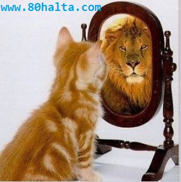
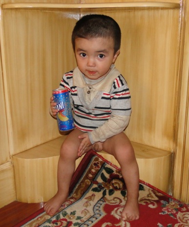

ئەسسالامۇ ئەلەيكۇم مۆھتىرەم تورداش، بلوگىمىزغا خۇش كەپسىز، قۇتلۇق قەدەملىرىڭىزگە مەرھابا!
 ئاخىرقى بىر قۇتا كولا...
ئاخىرقى بىر قۇتا كولا...
ئاپتورى:Birzat ۋاقتى:2013-09-28

كولا ئىچىپ باقمىغىلى خىلى ۋاقىت بولغان ئىدى. بۈگۈن كەچقۇرۇن مايلىقراق تاماق يەپ قىلىپ كۆڭلۈم مۇزدەك كولا تارتىپ قالدى. ئايلىنىپ كەلگەچ دۇكاندا بىردەم ئولتۇرۇپ كىلەي دەپ سىرتقا چىقىپ كوچا دوقمۇشىدىن بىر قۇتا پەپسى كولا سېتىۋىلىپ خەقلەرنىڭ، بولۇپمۇ مەن كولا ئىچىشتىن پەرھىز بۇيرۇيدىغان خىرىدارلىرىمنىڭ كۆرۈپ قىلىشىدىن ئەنسىرەپ قولۇمدىكى كولانى يوشۇرۇپراق كېتىۋاتسام 30 ياشلارغا بارماي تۇرۇپلا دىئابىت كېسىلى بولۇپ قالغان كونا خىرىدارىم ئۇچراپ ئەھۋال سورىغاچ يولۇمنى توستى. <<ئاپلا>>، دېدىم ئىچىمدە.
خەتكۈش: كولا
چايخۇمارلىق ھەققىدە ئەمەلىي پاراڭ
ئاپتورى:Birzat ۋاقتى:2013-09-27
 دادام مىجەزى سەپرا بولىشىغا قارىماي ئىسسىقلىق دورا-دەرمان تەڭشىتىپ ئاچچىق دەملەپ ئىچەتتى. قارا چاي دېگەننىمۇ <<ئاتنىڭ قېنىدەك قېپ-قىزىل >> قېنىق دەملەپ ئىچمىسە ئۇنىمايتتى. بەزىدە ئۆيدە ئىسسىقلىق دورا چاي تۈگەپ قالغان بولسا قايناق سۇغا قارامۇچ دەملەپ ناۋات سىلىپ ئىچكىننى كۆرەتتۇق.
دادام مىجەزى سەپرا بولىشىغا قارىماي ئىسسىقلىق دورا-دەرمان تەڭشىتىپ ئاچچىق دەملەپ ئىچەتتى. قارا چاي دېگەننىمۇ <<ئاتنىڭ قېنىدەك قېپ-قىزىل >> قېنىق دەملەپ ئىچمىسە ئۇنىمايتتى. بەزىدە ئۆيدە ئىسسىقلىق دورا چاي تۈگەپ قالغان بولسا قايناق سۇغا قارامۇچ دەملەپ ناۋات سىلىپ ئىچكىننى كۆرەتتۇق.
ئەتراپتىكىلەرنىڭ پات-پات دادامغا بۇ ھەقتە ئاگاھلاندۇرۇش بىرىپ ئىسسىقلىق دورا چايلارنىڭ جىگەرگە، كۆزگە يامان تەسىرى بولىدۇ دەپ ئەسكەرتىپ تۇرۇشلىرىنى ئاڭلاپ تۇراتتۇق. بۇ گەپلەرنى ئاڭلىغان ۋاقىتتا بەزىدە ئۇلارغا ئۆزىنىڭ كۆز قاراشلىرىنى سۆزلەپ ‹‹سوغۇق ئىش›› قىلىدىغان ياكى سوغۇقجان كىشىلەرگە ئىسسىقلىق دورا چاي زىيان قىلمايدۇ، مەندەك گەجخاچى ئادەمگە
دۇنيا بالىلار كۈنى ھارپىسىدا بىر-ئىككى ئېغىز پاراڭ
ئاپتورى:Birzat ۋاقتى:2013-05-29

باللىرىمىزنى كارتون دۇنياسى بىلەن يەسلى تارتىۋالمىسۇن دېيىشتۇق. بۇنداق دېيشىمدە ئىلگىرى باللىرىمغا كارتوننى كۆپ قويۇپ بەرمەيدىغان ۋاقىتلاردا كەچلىرى مەن ئېيتىپ بەرگەن ھېكايىلەرگە قۇلاق سىلىپ ئاڭلايتتى، مەن بىلەن ئويناپ ھاردۇرۋېتەتتى، مەن سىرتقا ماڭغاندا ئارقامدىن ‹‹ئاللاھقا ئامانەت›› دەپ ئۇزۇتۇپ چىقاتتى. ئۆيگە كەلسەم ئويناۋاتقان يېرىدىن ئالدىمغا يۈگۈرۈپ كىلىپ ‹‹ئەسسالامۇ ئەلەيكۇم دادو، كەلدىڭما؟!! كەچتە نېمە ھېكايە ئېيتىپ بىرىسەن!!!›› دەيتتى. ئارىدا ئالدىراش بولۇپ كەتكەندەك بولۇپ باللارغا كۆڭۈل بۆلۈپ بولالماي قالغاندا كومپيۇتېرنى ئۆزلىرى ئىچىشىپ كۆرىدىغان كارتونلارنى ئىزدەپ تېپىپ ئولتۇرۇپ كۆرۈپ كېتىشسە، يېنىغا بىرىپ چاقىرساممۇ ئاڭلىمايدۇ. 3 كەپسىز ئوغۇل ھېچقانداق جىدىلى يوق كارتون كۆرۈپ ئولتۇرۇپ بەرسە خاتون كىشى دېگەنگە خۇيمۇ ياقسا كېرەك، ئۆي ئىشلىرىنى قىلىۋالدىم دەپ شۇنىڭغا خوش. ئەتتىگىنى دۇكانغا ماڭسام ئارقامدىن سۆيۈپ ئۇزىتىدىغان، كەچلىرى ھىكايەمگە قۇلاق سالىدىغان تاتلىق ئوغۇللىرىمنى كارتون دۇنياسىدىكى ئوۋتىمەن، چاشقان مۈشۈك، زەربىدار توشقان، چاقماق كۈچۈكلەرگە تارتقۇزۇپ قويۇپتىمەن. مەن ئويلاۋاتقان مۇنداق بىر ئىش بار:
خەتكۈش: بالىلىق
مۇكاپاتقا ئىرىشكەن بويۇملارنى ساتىمەن
ئاپتورى:Birzat ۋاقتى:2013-01-03

مەن شۇ يەردە چوڭ بولمىغاندەك يىزىدا سوغۇقنىڭ بەك بولىدىغانلىقىنى بىلمەيدىغاندەك ھەيران قالدىم، تاھارەت ئالغىلى چىقىپ كىرگۈچە سوغۇق ۋەھشىي چاقىدىكەن ئەمەسما. مېنىڭ ياتاق ئۆيۈمغۇ نەچچە ۋاقىتتىن ئوت يېقىلمىغان بولغاچقا يېرىم كىچىگىچە مەشتە گۈرۈلدەك ئوت كۆيگەن بولسىمۇ ئوت ئۆچىشىگە ئۆي سوۋۇپ مۇزلاپ كېتىپتۇ، سوغۇقتىن ئويغىنىپ كېتىپتىمەن، باللىرىم تاتلىق ئۇخلاۋاتىدۇ، لىكىن يوتقاندىن چىقىپ قالغان قوللىرىنى تۇتۇپ باقسام مۇزدەكلا، خوتۇننى ئويغۇتۇپ يۈرمەي ئۆزۈم پالاقشىپ يۈرۈپ مەشكە ئوتنى قايتىدىن يېقىپ ئۆينى ئىسسىتتىم. مۇشۇ تەرىقىدە 3 كۈن تۇرۇپ ئاخىرى، ۋاي ئانا سوغۇق سەل ياماندەك تۇردۇ بۇ يىل، بىزگە ئىجازەت بىرىڭلار، بولسا سىلەرمۇ بىز بىلەن بىزنىڭكىگە بىرىڭلار، قەھرىتان قىشنى بىزنىڭكىدە ئىسسىق ئۆتكۈزۈپ چىقارسىلەر دېسەم، ئانام كۈلۈپ: يىلدا قىشتا مۇشۇنداق سوغۇق بولىدۇ بالام، ھىلىمۇ بىز نەچچە يىلدىن مۇزلاپ قالماپتىمىز، ئۇنچىۋالا چىدىماسلىق قىلما دەيدۇ.
شۇنداق قىلىپ گەپ سەل ئۇزۇراپ كەتتى. ئەمدى مەن دېمەكچى...
ساغلام ياشاپ كېسەللىكنىڭ ئالدىنى ئىلىشتىكى ئۈچ موھىم ئىش
ئاپتورى:Birzat ۋاقتى:2012-12-08
ساغلام بولمىغان روھىي ھالەتنىڭ ئىجتىمائىي تۇرمۇشقا كۆرسىتىدىغان تەسىرلىرى ھەققىدە باشقىلارغا ياردەم قىلىشنى ئاۋارچىلىق ھېسابلاپ ئادەمنىڭ ئۆلۈپ كېتىۋاتقىنىغا پەرۋا قىلماسلىق، 2012-يىلى قىيامەت بولىدۇ سەپسەتىسىنىڭ كۈچلۈك ۋەھىمە پەيدا قىلىشى دېگەندەكلەرنى مىسالغا ئىلىشىمىز مومكىن.
مېنىڭ تېبابەت ئۈگۈنۈش ۋە ئەمەلىي ئىزدىنىش جەريانىدا ھېس قىلغىنىم شۇ بولدىكى - ساغلام ياشاپ كېسەللىكنىڭ ئالدىنى ئىلىش ئۈچۈن ھاياتتا مۇنداق ئۈچ ئىش ئىنتايىن موھىمكەن:
1.ئىلمى ئوزۇقلىنىش.
2.توغرا بولغان تۇرمۇش ئادىتى
3.ساغلام روھىي ھالەت
...................................
<<ئىگىلىك سەھنىسى>> پروگراممىسىغا تەييارلىق ۋە بۇ ھەقتە قىسقىچە خاتىرە
ئاپتورى:Birzat ۋاقتى:2012-12-07
بىرەر يۈز ئادەمنىڭ ئالدىدا جىددىيلەشمەستىن ئوتتۇرغا چىقىپ سۆز قىلىش ئۈچۈن خىلى زور جۈرئەت كېتىدىغان ئىش ئىكەن. بولۇپمۇ تېلۋىزىيە ئىستانسىنىڭ پروگراممىسى دېسە قىلىدىغان سۆزۈمنى تاپالماي قېزىرىپ، تاتىرىپ يۈرەرمەنمۇ دېگەن ئەندىشە بىلەن نەچچە قېتىم بۇ پروگراممىغا قاتنىشىشتىن ۋاز كېچىش خىيالىغىمۇ كىلىپ قالدىم. ۋاقىت قىستاپ كىلىۋاتاتتى، ھېچقانداق تەييارلىق قىلالماي يۈرەتتىم، راستىنى دېگەندە مېنى بۇ پروگراممىغا تەكلىپ ئەتكەن كىشى قانداق تەييارلىق قىلىشىم كېرەكلىكى ھەققىدە ماڭا تۈزۈكرەك بىر نېمە دېمىگەن ئىدى. پەقەتلا مەركىزى تېلۋىزىيە ئىستانسىنىڭ ئىگىلىك تېكلىگۈچىلەر ھەققىدە ئىشلىگەن مۇسابىقە...
ئۇيغۇر مۇسۇلمانلىرى ۋە ساغلاملىق
ئاپتورى:Birzat ۋاقتى:2012-11-23

بۇ بەكلا چوڭ تېما بولۇپ ئەتراپلىق يورۇتۇپ بىرىش ئۈچۈن كۆپ كۈچ سەرىپ قىلىشقا توغرا كىلىدۇ، مېنىڭ بۇ يەردە توختالماقچى بولغىنىم ئىسلام ئەقىدىسىنى يادىرو قىلغان دىنىي ئەھكاملارنىڭ ئۇيغۇر مۇسۇلمانلىرىنىڭ سالامەتلىكىگە كۆرسەتكەن تەسىرى ھەققىدە كۆز قاراشلىرىمنى ئوتتۇرغا قويۇپ باقماقچىمەن.
تېمىنىڭ تەرەققىياتى تۆۋەندىكى كىچىك سەھىپىلەر بويىچە ئىزاھلىنىپ ماڭىدۇ:
1.مەنىۋى ھوزۇر
2. ياشاش ئادىتى
3.پاكىز، ھالال يېمەكلىكلەر
4.تازىلىق
5. تەبىئەتكە كۆڭۈل بۆلۈش
6.جامائەتچىلىك ئېڭى ۋە قىرىنداشلىق
7.ئىسلام ئەقىدىسىنىڭ ئۇيغۇر تېبابىتىگە كۆرسەتكەن تەسىرلىرى
دىئالوگ-مەڭگۈلۈك گۈزەللىك ئىستىگۈچىلەر كىرگەي!
ئاپتورى:Birzat ۋاقتى:2012-09-29

ئايال پادىشاھلارمۇ قېرىپ يۈزلىرى دۇنيا خەرىتىسىدەك بولۇپ كەتكىننى كۆرۈپ تۇرىمىز، قېرىمايدىغان، ئاجىزلىمايدىغان، گۈزەللىكىدىن قالمايدىغان ئىش بولسا شۇلار بىر ئۆمۈر قېرىمىسا بولاتتى. لىكىن رىئاللىق رەھىمسىزدۇر. تۇغۇلماق، قىرانلىق، ئاجىزلىشىش، ئۆلۈم يارالمىش قانۇنىيەتلەردىندۇر. چوقۇم مەڭگۈ قېرىماي ياش تۇرسام بولىتتى دەپ تۇرۇۋالسىلا، تۆۋەندىكى تەكلىپنى بىرىمەن:
تۇغلۇق ئەپەندىمنى ئەسلەپ
ئاپتورى:Birzat ۋاقتى:2012-06-11

باللادىن تېلفۇن نۇمۇرىنى سوراپ تېپىپ تېلفۇن قىلدىم، ئۆيىگە تەكلىپ قىلدى. تاۋۇز تىلدى، ئايالىنى تاماققا بۇيرىتىدىغاندەك قىلغان ئىدى، ئاكا، ئۆزلىرىنىڭ سۆھبىتىدە بولاي دەپ كېلىۋىدىم، ئۆيدىكىلەرنى ئارتۇق كايىتمىسىلا دەپ توسۇپ قويدۇم. ئىجتىمائىيەت، ئەخلاق، ئادىمىيلىك ھەققىدە يېزىلغان كىتاب-ماقالىلىرى ھەققىدە سۆھبەتلەر بولۇندى. يارمۇھەممەد تاھىر تۇغلۇق ئەپەندى سۆزنى ئاستا، ئۈزۈپ-ئۈزۈپ قىلىدىغان بولۇپ ئاڭلىغۇچىغا بۇ كىشىنىڭ ئىچىدە بىر ھەسرەت قاينايدىغاندەك تۇيغۇ بىرىدىكەن.....
خەتكۈش: تۇغلۇق
2011-يىللىق بلوگ باھالاشتا 80خالتا بلوگى يەنە بىرىنجى بولدى
ئاپتورى:Birzat ۋاقتى:2011-12-29
80خالتا بلوگى 2011-يىللىق ئۇيغۇردىكى 10 چوڭ مۇنەۋۋەر بلوگنى باھالاش پائالىيىتدە 1-بولۇپ بىلكان ئېلېكتىرون پەن-تېخنىكا چەكلىك شىركىتىنىڭ WiFi نەشىرى، 2398 يۈئەن قىممىتىدىكى بىلكان پەد (تاختا كومپيۇتېر) مۇكاپاتىغا نائىل بولدى. بۇ پائالىيەتنى ئۇيۇشتۇرغان ئەلداۋا تورى، قوللىغان بىلكان شىركىتى ۋە تورداشلارغا تەشەككۈرلەر بولسۇن!
80خالتا دۇكىنىدا يېزىلغان خاتىرىلەر(6)
ئاپتورى:Birzat ۋاقتى:2011-11-02
بىر چاغدا ئېنگىلىزچە زۇۋاندا بىر قىز : - مەن قەشقەرنى بىلمەيتتىم، تۇنجى كىلىشىم ئىدى، دوستۇم سىز بىلەن ئالاقىلىشىپ قويۇپتىكەن دەپ تېلفۇن قىپتۇ. سەن خاتىرجەم بول دەپ ماشىنا كىلىشىگە ئۈلگۈرۈپ بىكەتكە ئالدىغا چىقتىم. قاراسام قاراماتاقراق كەلگەن، بىر قارىسا ھىندىستان كىنو چولپانلىرىغا ئوخشايدىغان، يەنە بىر قارىسا ياۋرۇپالىق سېرىق چاچ قىزلارغا ئوخشاپ كېتىدىغان بىر قىزىم ئىكەن. ئالدىغا بىرىپ سالاملاشتىم، ۋاي بۇ قورۇنۇش دېگەن بىزنىڭ قىزلىرىمىزدىلا بارمۇ نېمە دەپ قالدىم، شۇنداق يېقىملىق كۈلۈمسىرەپ، كونا دوستىدەك سالاملىشىپ ھال سوراپ كەتتى. (ماندا بىرەر مېتىر ئارىلىق ساقلاپ جۇما يانا  ). ئالدىنقى كۈنى ئۇچۇر بەرگەن دوستۇم بۇ قىزنىڭ ۋاقتىنىڭ بەك قىسلىقىنى ئېيتقان ئىدى. شۇڭا بۇ قىزدىن ۋاقىتنى ....
). ئالدىنقى كۈنى ئۇچۇر بەرگەن دوستۇم بۇ قىزنىڭ ۋاقتىنىڭ بەك قىسلىقىنى ئېيتقان ئىدى. شۇڭا بۇ قىزدىن ۋاقىتنى ....
ئۈرۈمچى
ئاپتورى:Birzat ۋاقتى:2011-09-25
بۇنداق گەپلەر ئىزدىنىشتا مودا بولۇپ تۇرىدۇ. بۇ قېتىمقى مودا سۆز ‹‹سەكسىي›› بوپتۇ. ئالدىنقىسى ‹‹ بىز مۇشۇنداق چاكىنلىشىمىز›› ئىدى. 
مەنمۇ بۇلتۇر جىجاپ قويۇپ بلوگىمدا ئىلان قىلمىغان ساياھەت خاتىرەمدىمۇ ئۈرۈمچى قىزلىرىنى سۈپەتلىگەندە ئىشلىتىپتىكەنمەن سېكسىي دېگەن سۆزنى. لىكىن ئىشلىتىپ بولۇپلا بىر خىل بىئارام بولۇپ قالغان ئىدىم.
ئەسلى بۇ قېتىمقى سەپەردە ئۈرۈمچىدە 5-6 كۈن تۇرۇپ ئاندىن غۇلجا تەرەپلەرگە ئۆتمەكچى ئىدىم. بۇ قېتىمقى ساياھەت پىلانىمدىن خەۋىرى بار كونا خىرىدارلىرىم ۋە 80خالتا بلوگىنىڭ قىزغىن ئىشتىراكچىلىرىدىن بولغان تورداشلار ئۈرۈمچىدىكى ۋاقتىمدا مەن بىلەن كۆرۈشكىسى بارلىقىنى ئېيتىپ ئۇچۇر يوللاشتى. مەن ھەر بىر ئۇچۇر يوللىغۇچىغا ئىمكان بار ۋاقىت ئورۇنلاشتۇرۇپ كۆرۈشىدىغانلىقىمنى ئېيتىپ جاۋاپ قايتۇرغان بولساممۇ ئۈرۈمچىدە ئاران ئىككى كۈنلا تۇرالىدىم. ئۈرۈمچىدە تۇققانلارنى يوقلاپ، مىھمان بولۇپ دېگەندەك ئالدىراش يۈرۈپ ماڭا ئالدىن ئۇچۇر قىلغان خىرىدارلاردىن 2-3 بىلەن كۆرۈشەلىگەندىن باشقا كۆپلەر بىلەن ئۇچرىشىشقا ۋاقىت چىقىرالمىدىم. ئانام، ئايالىم ۋە ئوغلۇم بولۇپ تۆتىمىز ماڭغان بۇ ساياھەت ۋە تۇققان يوقلاش پىلانىدا مەم كۆپچىلىككە بويسۇنۇشقا مەجبۇر بولۇپ قالدىم. تۇققانلارنىڭ مىھماندارچىلىقىدىن قۇتۇلۇپ سەپەرنىڭ ھاردۇقىنى چىقىرىش ئۈچۈن بىر ساۋاقدىشىمنىڭكىگە بارماقچى ئىدىم، كەچ قالسام قونۇپ قىلىشىم مومكىن دەپ قويۇپ مىھمانخانىغا چۈشتۈم. تۇققانلار ھەر قانچە ياخشى كۈتىۋىلىشقا تىرىشقان بىلەن مىھمانخانىدا ياتقاندەك ئازادە بولغىلى بولمايدىكەن. ئەتىسى ئەتتىگەندە مىھمانخانا زالىدا كىلىشىپ قويغان خىرىدارلىرىم بىلەن ئۇچرىشىپ، ئىشىمنى تۈگۈتۈپ سىرتقا چىقتىم. ئۈرۈمچىنىڭ كوچىلىرىدا ئادەم بالدۇرقىدەكلا كۆپ ئىدى، قىز-ئاياللارنىڭ مودىلىشىپ ، جەلىپلىك كىيىنىشى مەن كۆرگەن 3-4 يىل بۇرۇنقى ئۈرۈمچىدىن تېخىمۇ يۇقۇرى كۆتۈرلۈپ، ئۆزىنىڭ ئاياللىق بەلگىلىرىنى تېخىمۇ رۇشەن گەۋدىلەندۈرۈش ئۈچۈن كىيىم-كېچەك ، چاچ پوسۇن، گېرىم دېگەندەكلەردە رەسمى سېكسىيلىشىپتۇ* .
ئېنگىلىزچە - ئۇيغۇرچە لۇغەت: sexy - مودا، جەلپ قىلارلىق، جىنسىي ھەۋەسنى قوزغايدىغان.
ياشلار باغچىسى ئالدىدا دورا-دەرمەك دۇكىنى ئاچقان ياسىنجان بىلەن كۆرۈشۈپ ئۆتەي دەپ 14-ئوتتۇرا مەكتەپ ئالدىدىن ئۆتۈپ كېتىۋېتىپ مەكتەپ دەرۋازىسىدىن چىقىپ ياشلار باغچىسى تەرەپكە قاراپ ماڭغان 4-5 نەپەر قىز-يېگىت ئوقۇغۇچىلار دىققىتىمىنى تارتتى. بۇ بالىلارنىڭ كېيىملىرىمۇ شۇنداق مودا ئىدى. لىكىن نىمىلا بولمىسۇن بۇلارنىڭ قولىدا كىتاب بار ئىدى.
ياسىنجان بىلەن ئۇچرىشىپ قايتاشىمدا بالامنى يىتىلەپ ياشلار باغچىسىنىڭ يېنىدىن ئۆتۈپ كىتىۋاتقۇچە 14-ئوتتۇرا مەكتەپتىن چىققان ھىلىقى ئوقۇغۇچىلارغا كۆزۈم چۈشۈپ قالدى. باغچىنىڭ بۇلۇڭىدا قولىدا كىتاب كۆتۈرىۋالغان، كېيىنىشى ئالامەت سېكسىي بىر قىز ساۋاقداشلارنىڭ ئالدىدا تاماكىسىنى شوراپلا ئوغۇل ساۋاقدىشىنىڭ يۈزىگە پۇۋلىدى.... ئەزەلدىن كىتاب ئوقۇيدىغان، ئالىي ئوقۇللاردا ئوقۇيدىغانلارغا بۆلەكچە ھەۋەس قىلاتتىم. بۇ قىتىم كونا ھەۋەس بىلەن ئۇشۇ ئۆسمۈر ئوقۇغۇچىلارغا لەپپىدە قاراپ سالغانلىقىم ئۆزىلا ماڭا بىر خىل خورلۇق تۇيۇلۇپ كەتتى. ئىلگىركى ھاياجان ۋاقىتلىرىم بولغان بولسام بۇنداق بىر كۆرۈنۈش ئۈچۈن نۇرغۇن ئەلەم تارتىپ، دەرت يۇتۇپ نەچچە كۈن ئۇيقۇم كەلمەس بولغىيتتى، ئىسىت مىللەت ئانىلىرى، مىللەتنىڭ گۈللىرى...دەپ چوقۇم يېغا تۇتاتتى. لىكىن بۇ قىتىم بۇنىڭغا ئوخشاش كۆرۈنۈشلەرنى كوچىلاردا تولا كۆرۈپ كۆنۈپ قالدىم بولغاي بەك ۋايىم يەپ كەتمىدىم. ئاچا-سىڭىللىرىمىزغا شەرمى-ھايا تىلەيمەن.
ئايال-باللىرىمنى ئىلىپ سۇ ئۈستى باغچىسىغا ئىلىپ باردىم. ئۇياق-بۇياقنى ئايلانغاچ بىر-ئىككى پارچە سۈرەت تارتىپ قويدۇم.
كۆل بويىدىكى شۇنچە ئۇز ئىچىلىپ كەتكەن ‹‹گۈل چاي›› غا مەستلىكىم كىلىپ سۈرەت تارتاي دەپ ئاپاراتنى توغۇرلاۋاتسام يان تەرەپتە ئولتۇرغان بىر-ئىككى سىتۇنېت قىز ھەييارلىق قىلىپ ‹‹ مانا بىز، بىز بۇياقتا...›› دەپ شەرەت قىلغىلى تۇرۇپتۇ. بوپتۇ كۆڭلۈڭلار يەردە قالمىسۇن، سىلەرنى سۈرەتكە تارتىپ قالسام تورغا يوللاپ سالىمەن، خاپۇمماڭلا دېگەچ بىر پارچە سۈرەت تارتىپ قويدۇم.
خەتكۈش: ئۈرۈمچى
چاققاق ئوتتىن باشلانغان پاراڭلار (غۇلجا ساياھەت خاتىرىسىدىن پارچە)
ئاپتورى:Birzat ۋاقتى:2011-08-24

ئەرلەر گۆش توغرايدىغان، زىققا گۆش ئۆتكۈزىدىغان، كاۋاپنىڭ ئوتىنى تەييار قىلىپ كاۋاپ پۇشۇرىدىغان، سوغۇق سەي تەييارلايدىغان ئىشلارنى ئۆز ئارا تەقسىملىۋىلىپ ئىشقا كىرىشىپ كەتتۇق. بۈگۈن بۇ يەردە ئاياللارنى <<قازان بېشى>> غا كەلتۈرمەي ئاياللارنى ئۆز قولىمىز بىلەن بىر مىھمان قىلىۋالىدىغان بولدۇق. ئاياللارمۇ بۇ پىكىرىمىزدىن كۈلۈشۈپ مەمنۇن بولۇشتى. تۇشمۇ-تۇشتىن ئىشلەپ كاۋاپلارنى زىقلاپ بىردەمدە تەييار قىلىپ بولدۇق. دەريا بويىدا ئولتۇرۇپ كاۋاپ پۇشۇرۇپ يېيىشمۇ ئۆزگىچە بىر ھوزۇركەن.
پەرزەنتلەردە تەبىئەت سۆيگۈسىنى قانداق يېتىلدۈرۈش كېرەك؟ مۈشۈك بېقىش
ئاپتورى:Birzat ۋاقتى:2011-08-21
بالىلار تەبىئەتتىكى جاندارلارنى، ئۆسۈملۈكلەرنى كىتابتىكى رەسىملەردىن، تېلۋۇزۇرلاردىن كۆرىدۇ. ھەقىقى مەنىدىكى يېقىنلىشىش، چۈشۈنۈش يوق ھالەتتە ئۆسۈپ يېتىلىدۇ. يەسلى، مەكتەپلەر قىلىپ بىرەلمىگەن ئۇ ئىشلارنى ئۆز ئۈستىمىزگە ئىلىپ بالىلىرىمىزنى ئانچە-مۇنچە سەھرالارغا ئىلىپ چىقىپ ئوماق موزاي-قوزىلارنى، قۇشلارنى، پاقا - قوڭغۇزلارنى كۆرسىتەرمىز. لىكىن بۇمۇ يېتەرلىك بولمايدىكەن دەپ قاراپ بىنا ئۆيدە بېقىشقا ئەڭ مۇناسىپ كىلىدىغان ھايۋاندىن مۈشۈكنى بىقىپ كۆرۈپ بېقىشنى نىيەت قىلدىم. كىيىنچىرەك شارائىت يار بەرسە ئۆيگە چوڭ ھەجىمدىكى بىلىق قاچىسى ئىلىپ بىلىق، تاشپاقا، راك دېگەندەك سۇ جانلىقلىرىنى باققۇم بار.
ئۇيغۇر ئوقۇغۇچىلار شۇنچە بايمۇ؟
ئاپتورى:Birzat ۋاقتى:2011-04-01

مەنمۇ بۇنداق ئىشقا بىر قانچە قېتىم دۇچ كەلدىم . ئادەتتە ئۈرۈمچىدىكى خىرىدارلىرىمىز زاكاس قىلغان ھەسەل ۋە باشقا شەربەت دېگەندەك پوچتىدىن ئەۋەتىش قولايسىز بولغان ماللارنى ئاپتۇبۇستىن ئەۋەتىمىز. شوپۇر ئۈرۈمچىگە بىرىپ ئۈچتاش بىكەت يېنىدىكى <<لوقمان تاللا بازىرى>> نىڭ مال ساقلاش ئورنىغا ئەكىرىپ بىرىدۇ. ئۇلارنىڭ تېلفۇن قىلىشى بىلەن بىزگە مال زاكاس قىلغان خىرىدار ئۇ يەرگە بىرىپ بۇيرۇتمىلىرىنى تاپشۇرۇپ ئالىدۇ. كىرا ھەققى بىر تال سەرەڭگە قېپىچىلىك نەرسە بولسىمۇ 20 يۈئەن، چوڭراق يەشىك بولسىمۇ 20 يۈئەن. 20-30كىلوگىرام كەلگۈدەك چوڭ يەشىك بولسا 30 يۈئەن ئەتراپىدا بولىدۇ. خىرىدارلارنىڭ ئىھتىياجلىرى ئوخشاش بولمىغاچقا بەزىلەر 5-10 گىرام زەپە، بىرەر بولاق ئالاھىدە چاي بۇيرۇۇتسا، بەزىلەر 5-6 كىلو ھەسەل. گۈلقەنت ۋە باشقا بۇيرۇتمىلارنى بۇيرۇيدۇ. ئەنە شۇ بارماقچىلىك چوڭلۇقتىكى نەرسە ئۈچۈنمۇ ۋە باشقا چوڭراق ھەسەل-گۈلقەنت ئۈچۈنمۇ ساقلاش ھەققى قوشۇلۇپ 25 يۈئەن كىرا تۆلەيدۇ. مەن ئۈرۈمچىگە ئەۋەتىدىغان 5-6 قېتىملىق ماللارنى يېغىنچاقلاپ ئوقۇغۇچى باللاردىن بىرەرسىگە كىرادىن ۋە ئىشىك ئالدىغىچە يەتكۈزۈپ بىرىدىغان قوشۇمچە مۇلازىمەتتىن پايدا چىقىرىپ بىرەي دەپ ئويلىشىپ بىرسىگە بۇ ئىشنى ئېيتسام دەسلىپىدە خۇش بولدى، كىيىن بىر-ئىككى قېتىم قىلىپ بېقىپ <<خەخنىڭ ئالدىغا ئاپىرىپ بىرىشتىن غەلىتە ھېس قىلىپ قالىدىكەنمەن>> دېگەن باھانە بىلەن بۇ ئىشنى بولدى قىلدى. يەنە بىرسىمۇ بۇ ئىشنى بىر نەرسە كۆتۈرىدىغان <<قارا ئىش >> ئىكەن دەپ باش تارتتى....
بىرزاتنىڭ يازلىق ساياھەت پىلانى تۈزۈشىگە تەكلىپ بىرىڭ!
ئاپتورى:Birzat ۋاقتى:2011-03-10

مېنىڭ قارىشىمدا ساياھەت قىلىشتىن مۇنداق ئىككى مەقسەتكە يەتكىلى بولىدۇ:
1.ئەڭ موھىمى خىزمەت ۋە تۇرمۇش بېسىمىدىن قۇتۇلۇپ ئازادە بىر كەيپىيات ئىچىدە ئارام ئىلىش، جىددىي تۇرمۇش رېتىمى پەيدا قىلغان يۈرەك، مېڭە-قان تومۇرلاردىكى بېسىمنى يېنىكلىتىش،رەئىس ئەزالارنى چوڭ بىر قېتىملىق ئارام ئالدۇرۇش ئارقىلىق ساغلاملىقنى كاپالەتكە ئىگە قىلىش.
2.سىرتقى دۇنيادىكى ئۆزگىچىلىكلەرنى كۆرۈش ئارقىلىق مېڭىدىكى ئۇچۇرلارنى بېيىتىش، ئىدىيە، كۆز قاراشلىرىدا تەڭشەش ئىلىپ بىرىش، مۆجىزە كەبىي تەبىئەت گۈزەللىكىدىن زوقلىنىش.
خەتكۈش: ساياھەت
سىزدىمۇ <<ئۆزىگە شەيدا بولۇش كېسىلى>> بارمۇ؟
ئاپتورى:Birzat ۋاقتى:2011-03-05

خىرىدارىڭ بولمىسا زىبالىقىڭ نە كېرەك دېگەن سۆز <<خېرىدارىڭ بولمىسا زىبالىقىڭنىڭ نە ئەتىۋارى >> دېگەندەك ئېسىمدە قاپتىكەن. بۇ گەپنى چوڭ ئانام رەھمەتلىك تولا دەيتتى. قۇلىقىمغا سېڭىپ قاپتۇ. ھە رقانچە قىممەت باھالىق نەرسە بولسىمۇ ئۇنىڭ قېممىتىنى بىلىدىغان، قەدىرلەيدىغان كېشىسى بولمىسا ئۇنىڭ ھېچقانداق ئەھمىيتى بولماي قالىدىكەن. مەن پەقەت ئادەتتىكى بىر تېبابەت ھەۋەسكارى بولۇش سۈپىتىم بىلەن ئازغىنە بىلگەنلىرىمنى ئەدەبىي كىتابلارنى ئوقۇش جەريانىدا يېتىلىپ قالغان ئانچە-مۇنچە ئىپادىلەش قابىلىيىتىم بىلەن ئاددىي ئۇسۇلدا ئىپادىلەپ تورداشلارنىڭ ھوزۇرىغا سۇنۇش ئۈچۈن بلوگ يېزىپ نۇرغۇن <<خېرىدارلىق>> بولۇپ قالدىم. بەزىدە تورداشلارنىڭ ھۆرمەت بىلەن <<بىرزات ھەكىم>> دەپ چاقىرغىننى كۆرۈپ قىممىتىم تورداشلار تەرپىدىن تولۇق مۇئەييەنلەشتۈرۈلگەندەك ھېسياتتا ئاجىز ئىنسانلىق تەبئىتىم بىلەن ئۆزۈمدىن مەغرۇرلىنىپ بېشىم كۆككە يېتىدىغان مەستخۇش كەيپىياتتىمۇ بولۇپ باقتىم. لىكىن ئۆزۈمنى ھەقىقى تارازىغا سىلىپ دەڭسەپ كۆرۈپ باقسام ماڭا قىلىنغان <<خېرىدارلىق>> مېنىڭ <<زىبالىق>>ىمدىن كۆپ ئېشىپ كېتىپتۇ.
مېنىڭ ئوغۇللۇرۇم بلوگ يازغۇدەك بوپتۇ
ئاپتورى:Birzat ۋاقتى:2011-03-04

ئىلگىرى بلوگىمغا كۈندە دېگۈدەك يېڭىلىق مەزمۇنلارنى يوللاپ يامان ئۈگۈنۈپ قاپتىكەنمە، مانا ئەمدى 3-4 كۈندە بىر قارىسىمۇ يېڭىلىق كۆرگىلى بولمايدىغان بولۇپ <<تېما قەھەتچىلىكى>> يۈز بەرگىلى تۇردى. كۆپۈنچە ئادەملەر قان بېسىمى، خىزمەت بېسىمى، خوتۇن بېسىمى بولۇپ قىلىۋاتقان بۈگۈنكى كۈنلەردە مەن <<بلوگ بېسىمى>> غا دۇچ كىلىۋاتىمەن. ئىزدەپ باقسام بۇنداق بېسىمغا ئىلگىرى ئۇيغۇرچە بلوگ يازىدىغانلاردىن جېكمۇ دۇچار بولۇپ بېقىپتىكەن.
راستىنى دېسەم ئۆزۈمنى قەستەن ئالدىراش قىلىپ كۆرسىتىشتىن سەل خىجىل بولىمەن. كۈندۈزلىرىغۇ تېرىكچىلىك ئۈچۈن ئالدىراش يۈرۈپ بلوگنى يېڭىلاشقا ۋاقىت چىقمايدۇ، كەچتە ۋاقىت چىققان بىلەن ئۆيدىكى كومپيۇتېر ماڭا ئاشمايدۇ. ھەكىمنىڭ خوتۇنى بەرگىلى ئۇنىمايدىغان ئوخشايدۇ دەپ قالماڭلا، ئوغۇللىرىمدىن ئاشمايۋاتىدۇ، (بۇ باللا كىچىكلا تۇرۇپ، بلوگىر بولۇپ كېتەمدۇ، نېمە؟!!)
ئوغۇللىرىمدىن ئاشمايۋاتىدۇ، (بۇ باللا كىچىكلا تۇرۇپ، بلوگىر بولۇپ كېتەمدۇ، نېمە؟!!)
خەتكۈش: پارچە-پۇرات خاتىرىلەر بالا، پەرزەنت، بالىلىق
بىرزاتنىڭ بلوگچىلىق سەپىرى
ئاپتورى:Birzat ۋاقتى:2011-01-06

گەپنى يېغىپ 80خالتا بلوگىنىڭ ئۇدا ئىككى نۆۋەت ئۇيغۇرلاردىكى نادىر بلوگلارنى باھالاشتا چولپان بولۇشىدىكى ئامىللار ھەققىدىكى قاراشلىرىمنى ئوتتۇرغا تاشلاپ باقاي، يېڭىدىن ئىگىلىك تىكلەش يولىدا تىرىشىۋاتقان ياش دوستلارغا ئاز-تولا پايدىسى بولۇپ قالار:
1. 80خالتا بلوگىنى كەسپنى ئاساس قىلىپ يېزىپ ماڭغان بولغاچقا ئۆزۈممۇ زېرىكىپ قالمىدىم، ئىقتىسادىي ئۈنۈممۇ قازاندىم، تورداشلارمۇ ئەمەلىي نەپ ئالدى دەپ قارايمەن. ئىقتىسادىي ئۈنۈم دېگەندە بلوگدىن پايدىلىنىپ ئىلان كىرىمى قىلىش مېنىڭچە ئۇنچە ياخشى دەپ كەتكىلى بولمىسىمۇ لىكىن كەسپىي جەھەتتىن مەن بىلەن ھەمكارلىشىدىغان، ماڭا خىرىدار بولىدىغان نۇرغۇن ئادەملەرنى تېپىپ بەردى.
خەتكۈش: 80خالتا
بىرزاتنىڭ شەنبە كۈنىسى [ئەدەبىي يازمىلىرىم]
ئاپتورى:Birzat ۋاقتى:2010-12-25
تېلفۇننىڭ سائەت قوڭغۇرقى كۈندىكىدەك سەھەر 5:30 دا سايرىدى. ئاۋازنى توختۇتۇپ ئورنۇمدىن تۇرۇشقا شۇنچە تەرەددۇتلانغان بولساممۇ بېشىمنى كۆتۈرەلمەي ئۇخلاپ قاپتىمەن. ئوغلۇمنىڭ يېغا ئاۋازىدىن چۈچۈپ ئويغىنىپ سائەتكە قارىسام 6:45 بولۇپ كېتىپتۇ. كىچىك ۋاقىتلىرىمىزدا دادام سەھەردە مەسچىتتىن كىرگىچە ئۇخلاپ ياتقىنىمىزنى كۆرۈپ قالسا بەك خاپا بولۇپ كىتەتتى، - سەھەردە ئۇخلاپ ياتقان ئادەمگە شەيتان ھەمرا بولىدۇ، ناماز ۋاقتىدا ئۇخلاپ ياتقان ئادەم قان يېرىڭ ئىچىدە ياتقان بىلەن ئوخشاش. سەھەر تۇرغان ئادەمنىڭ دىلى يورۇق، ئىشلىرى بەركەتلىك بولىدۇ دەپ نەسىھەت قىلاتتى. ئوھ ، بۈگۈن تازا ئۇخلاپتىمەن دە،- دەپ ئورنىمدىن تۇرۇپ تاھارەت ئىلىپ، تاڭ ئىتىپ كېتىۋاتسىمۇ خىيالىدا يوق ئۇخلاۋاتقان ئايالىمنى تۈرتۈپ ئويغۇتىۋېتىپ بومدات نامىزىغا تۇردۇم. بىنانىڭ يان تەرىپىدىكى خوراز چىللىغىلى تۇردى، تۆۋە ، بۇ كەمنىڭ خورازلىرىمۇ ئۇخلايدىغان بولۇپ كېتىپتۇ، تاڭ ئاتقىلى نەۋاق دېگەنلەرنى خىيال قىلغاچ سائەتكە قارىسام 7:30 بوپتۇ. بولدىلا ناشتىنى دۇكاندىلا قىلاي دەپ ئايالىمنىڭ ئەتتىگەندە ئۆيدە ناشتا قىلىپ مېڭىشىنى ئېيتىپ تەكرار يالۋۇرۇشلىرىغا پىسەنت قىلماي ئالدىراپ ئىشىكتىن چىقتىم. قارىسام چىراقلار يورۇتۇپ تۇرغان قورۇ ئىچى جىمجىت، قوشنىلىرىمنىڭ چىراقلىرىمۇ يانمىغان. ھەي شەھەرلىكلەر، بۈگۈن شەنبە-دەم ئىلىش كۈنى دەپ مۇشۇ ۋاقىتقىچە غەپلەت ئۇيقۇسىدا ئۇخلاۋەرگەن گەپ، ئالەم-جاھان يۇرۇپ تاڭ ئاتقىلى نىكەم دەپ ئۆزۈمگە سۆزلىگەچ بېشىمنى لىڭىشتىپ قويۇپ يولۇمغا راۋان بولدۇم. كوچىدا ئاندا-ساندا ماشىنىلار ئۆتۈپ تۇرغاننى ھېسابقا ئالمىغاندا ھەممە ياق جىمجىت، نوربېشىدىكى كۈندە ناماز بومداتتىن يىنىپ بولغىچە نېنى پىشىپ بولدىغان ناۋاي ئەسنەپ، كىرىلىپ تونۇرىنىڭ كۈلىنى ئالغىلى تۇرۇپتۇ. ما ناۋايمۇ ئۇخلاپتۇدە بۈگۈن دەپ ئالدىمغا مېڭىپ قارىسام ئېگىز ئېرىق دوقمىشىدىكى مەسچىت ئىشىكى تېخىچە ئوچۇق، ھويلىسىدا چىراق يىنىپ تۇرىدۇ. تۆۋە بۈگۈن ماۋۇ ئادەملەرگە نېمە بولغاندۇ، ھەممىسى ئۇخلاپتۇيا،
خەتكۈش: بىرزات
خىيالىمدىكى كۈندۈلۈك تۇرمۇش ئادەتلىرىم
ئاپتورى:Birzat ۋاقتى:2010-12-08
تەكلىماكاننىڭ بىر بۇرجىكىدە ياشايدىغان پېقىر-كەمبەغەل بىر كىشىنىڭ تەن ساغلاملىقى باياشات، مولچىلىق شەھەرلەردە ياشىغۇچى، پۇلغا سىتىۋالغىلى بولىدىغانلىكى نەرسىنىڭ ھەر قانداقىغا ئىرىشەلەيدىغان ئاق ياقىلىق بايدىن ئۈستۈن بولىشىمۇ مومكىن. بۇ باي ساقايماس بىر كېسەلگە دۇچار بولسا، ھەر قانداق قىممەت دورىنى، ھەر قانداق ئۇستا دوختۇرنى سېتىۋالالىسىمۇ ساغلام بىر ھاياتقا ئىرىشەلمىسە ئىلكىدىكى مال-دۇنياسى ئۇنىڭ ئۈچۈن ھېچقانچە تەسەللى ئاتا قىلالماسلىقى مومكىن. بۇنىڭغا قارشى ھالدا كەمبەغەل ئىنسانلار توپى ئىچىدىن بىرسى ئېغىر بىر كېسەلگە مۇپتىلا بولغان بولسا ئۇنىڭ پۇلى بولماسلىقى سەۋەبلىك كېسىلىگە چارە قىلالماي ھاياتىنى ئاخىرلاشتۇرىشىمۇ مومكىن.
بىلەيچى بوۋايدىن باشلانغان قىسقا پاراڭلار
ئاپتورى:Birzat ۋاقتى:2010-11-13
ﮬﻪ ﺭﺍﺱ ﺑﺎﻟﻼ، ئەختەم ئۆمەر قەلىمىدىكى ﺑﯩﻠﻪﻳﭽﻰ ﺑﻮﯞﺍﻱ ﺋﯧﺴﯩﯖﻼﺭﺩﯨﻤﯘ؟...ﺋﯘ ﺋﺎﺩﻩﻡ ﮬﺎﺯﯨﺮ ﺑﻪﻙ ﻗﯩﺮﯨﭗ ﻛﯧﺘﯩﭙﺘﯘ. 93 ﻳﺎﺷﻘﺎ ﻛﯩﺮﺩﯨﻢ ﺩﻩﻳﺪﯗ. ﺗﯧﻨﻰ ﺳﺎﻏﻼﻡ ﻛﯚﺭﻧﯩﺪﯗ. ﻟﯩﻜﯩﻦ ﮔﻪﭖ ﻗﯩﻠﺴﺎ ﺗﯩﻠﻰ ﺳﯧﺮﺗﯩﻐﺎ ﭘﻮﻟﺘﯩﻴﯩﭗ ﭼﯩﻘﯩﯟﯨﻠﯩﭗ ﺳﻪﻝ ﻗﯩﻴﻨﯩﻠﯩﭗ ﻗﺎﻟﯩﺪﯨﻜﻪﻥ . ﻳﻪﻧﻪ ﺷﯘ ﺑﯩﻠﻪﻱ ﺳﯧﺘﯩﭗ ﺗﯧﺮﯨﻜﭽﯩﻠﯩﻚ ﻗﯩﻠﯩﯟﯦﺘﯩﭙﺘﯘ. ﺗﯜﻧﯜﮔﯜﻥ ﺩﯗﻛﻜﺎﻧﻐﺎ ﻛﯩﺮﯨﭗ ﺋﺎﺯﯨﺮﺍﻕ ﭘﯘﻝ ﺑﻪﺭﮔﯩﻦ ﻗﯩﻴﻨﯩﻠﯩﭗ ﻗﺎﻟﺪﯨﻢ . ﺗﺎﺵ ﺩﯦﮕﻪﻧﻨﻰ ﻳﯧﮕﯩﻠﻰ ﺑﻮﻟﻤﯩﺴﺎ ﻳﺎ ، ﺩﻩﭖ ﻗﻮﻝ ﺗﻪﯕﻠﻪﭖ ﻗﻮﻟﯩﺪﯨﻜﻰ ﺋﯩﻜﻜﻰ ﺩﺍﻧﻪ ﺑﯩﻠﻪﻱ ﺗﺎﺷﻨﻰ ﻗﻮﻟﺘﯩﻘﯩﻐﺎ ﻗﯩﺴﺘﯘﺭﻏﺎﻥ، ﺋﯜﻣﯜﺗﺴﯩﺰ ﺑﯩﺮ ﻛﻪﻳﭙﯩﻴﺎﺗﺘﺎ ﻛﯚﺭﺳﻪﺗﺘﻰ. ﺋﯘ ﺋﺎﺩﻩﻡ ﺑﯩﻠﻪﻥ ﺑﯩﺮﺩﻩﻡ ﭘﺎﺭﺍﯕﻼﺷﻘﯘﻡ ﻛﻪﻟﺪﻯ:
- ﺋﺎﻛﺎ، ﮬﯩﻠﯩﻘﻰ ﺋﻪﺧﺘﻪﻡ ﺋﯚﻣﻪﺭ ﺩﯦﮕﻪﻥ ﻳﺎﺯﻏﯘﭼﯩﻤﯩﺰ ﮬﯩﻜﺎﻳﻪ ﻗﯩﻠﯩﭗ ﻳﺎﺯﻏﺎﻥ ﺑﯩﻠﻪﻳﭽﻰ ﺳﯧﻠﻰ ﺑﻮﻟﯩﻠﯩﻐﯘ ﺩﻩﻳﻤﻪﻥ؟
- ﮬﻪ، ﻣﻪﻥ. ﻣﻪﻥ ﺷﯘ. ﻣﻪﻥ ﮔﯩﺰﯨﺘﻜﯩﻤﯘ ﺟﯩﻖ ﭼﯩﻘﻘﺎﻥ، ﺑﺎﻻﻡ ، ﭼﯧﻴﯩﯔ ﺑﺎﻣﺎ؟ ﺑﯩﮋ ﭘﯩﻴﺎﻟﻪ ﺑﯩﺮﻩ!
- ﺋﯩﭽﺴﯩﻠﻪ، ﺳﯩﻠﯩﻨﯩﯔ ﺑﺎﻟﻼ ﻧﯧﻤﻪ ﺋﯩﺶ ﻗﯩﻠﯩﺪﯗ؟ ﻳﺎﺷﺎﻧﻐﺎﻧﺪﺍ ﺋﺎﺭﺍﻡ ﺋﺎﻟﺴﯩﻠﯩﺮﻯ ﺑﻮﻟﻤﺎﻣﺪﺍ ﺋﻪﻣﺪﻯ؟
خەتكۈش: چايان
سەتراچخانىدا ساقال ئالدۇرۇپ ئۆزۈمگە كېسەل تاپتىم
ئاپتورى:Birzat ۋاقتى:2010-11-02
جۈمەگە بېرىشنىڭ ئالدىدا شەھىرىمىزدىكى خىلى داڭلىق دەپ قارالغان سەتراچخانىلارنىڭ بىرسىگە كىرىپ چاچ - ساقالنى ئالدۇرۇپ جۈمەدىن كىلىپ دۇكاندا ئولتۇرسام يۈزۈم چىم-چىم قىلىپ ئانچە-مۇنچە قىچىشقىلى تۇردى. بۇ قانداق ئىش بولۇپ كەتكىلى تۇردى ئەمدى دەپ ئەينەككە قارىسام قېزىرىپ، ئۇششاق نەرسىلەر ئۆرلىگىلى تۇرۇپتۇ. تۈنۈگۈن يەپ سالغان لەڭپۇڭ زىيان قىلدىمۇ نېمە دەپ كارىم بولماي ئىشىمنى قىلىۋېرىپتىمەن. كەچكە يېقىن ئوڭ يۈزۈم، ئېڭەك ئاستى سەل ئىششىپ، ئۇششاق مۇدۇرلار توقۇمدەك يامراپ بوپتۇ. شۇ ۋاقىتتىلا سەتراچخانىدىن گۇمان قىلىپ << ئاپلا >> دېدىم. ۋېروسقا قارشى، يەل ھەيدەپ مىكروب ئۆلتۈرىدىغان دورىلاردىن بىر ئىككى خىلنى ئىچىۋېتىپ ئۆيگە كەتتىم. كېچىچە يۈزۈم ئاغرىپ، تۇرۇپلا چىدىغۇسىز قىچىشىپ بىئارام قىلىپ پەقەتلا ئاراملىق بەرمىدى. تېرە بۆلىمىدە ئاكا دېمەتلىك بىر ئاغىنەم بار ئىدى. كېچىچە شۇنىلا چۈشەپ چىقىپتىمەن. ئەتتىگىنى تۇرۇپ ئەينەككە قارىسام بىر يۈزۈم گەزنىدەكلا ئىششىپ يېرىڭلىق ئۇششاق مۇدۇرلار يۈزۈمنى بىر ئاپتۇ.
بىنا ئۆيدە ئولتۇرۇشنىڭ قانداق ئەدەبلىرى بار؟
ئاپتورى:Birzat ۋاقتى:2010-10-26

بىزدەك كەڭرى يېزا-سەھرادا ياشاپ كۆنۈپ قالغان ئادەمگە قەۋەتلىك ئۆيدە ياشاش بىر ئاز سىقىلىش پەيدا قىلىدىكەن. كەچقۇرۇنلىرى ئادەتتە ئۆيگە قايتسام كىتاب كۆرمەي قالساملا ئوغلۇم بىلەن بىردەم ئوينىشىپ قويىمەن. ئاخشام ئۆيگە كىرسەم تاتلىق قىلىقلارنى چىقىرىپ مېنى تەڭ ئوينىشىپ بىرىشكە مەجبۇر قىلىپ قويدى دەسلەپتە مۈكۈشمەك ئوينىدۇق. مۈكۈۋالغان جايىمنى تېپىۋالسا غەلبىسىنى تەنتەنە قىلىپ چۇقىراپ سەكرەپ كېتىدۇ. خىلى ئۇزۇن مۈكۈشمەك ئويناپ سەل مەززىسى قالمىغىلى تۇرغاندا قوغلاشماق ئوينىدۇق. ئۇ قوغلايدۇ مەن قاچىمەن، يالغاندىن يىقىلىپ چۈشكەن بولىۋالىمەن. مېنى بىسىۋىلىپ بوينۇمغا مىنىپ قۇلقىمنى تارتىدۇ. شۇنداق قوغلاشماق ئويناپ يۈرۈپ مېنى بەك ھاردۇرۋەتتى. جىممىدە يېتىۋالسام مېنى تارتىپ تۇرغۇزماقچى بولۇپ كۈچەپ كىتىدۇ. ئالدىنقى كۈنلىرى تىلۋىزۇردىن كۆرگەننى دوراپ بىر ئويۇن چىقىرۋاپتىكەن. كۆرسەتكۈچ بارمىقىنى تاپانچا شەكلىدە ئۇدۇللاپ ئۆيدىكىلەرنى نىشانلاپ تۇرۇپ << تۇ، تۇ>> دەپ ئاتىدىكەن. باشقىلار يالغاندىن ئۆلگەن بولۇپ يېتىپ بەرمىسە كىلىپ ئىتتىرىپ دىگۈدەك ياتقۇزۇپ قويمىغىچە بولدى قىلمايدىكەن. شۇنىڭ بىلەن مەن قولۇمنى چىقىرىپ <<تۇ، تۇ>> دەپ ئوغلۇمنى << ئاتتىم >>. ئۇ گۈپپىدە يېقىلىپ جىممىدە ياتتى، بىردەمدىن كىيىن ئاستا ئورنىدىن تۇراي دېسە يەنە <<تۇ، تۇ>> دەپ قويۇپ ياتقۇزۇپ قويۇپ دېگەندەك
دەسلەپتە مۈكۈشمەك ئوينىدۇق. مۈكۈۋالغان جايىمنى تېپىۋالسا غەلبىسىنى تەنتەنە قىلىپ چۇقىراپ سەكرەپ كېتىدۇ. خىلى ئۇزۇن مۈكۈشمەك ئويناپ سەل مەززىسى قالمىغىلى تۇرغاندا قوغلاشماق ئوينىدۇق. ئۇ قوغلايدۇ مەن قاچىمەن، يالغاندىن يىقىلىپ چۈشكەن بولىۋالىمەن. مېنى بىسىۋىلىپ بوينۇمغا مىنىپ قۇلقىمنى تارتىدۇ. شۇنداق قوغلاشماق ئويناپ يۈرۈپ مېنى بەك ھاردۇرۋەتتى. جىممىدە يېتىۋالسام مېنى تارتىپ تۇرغۇزماقچى بولۇپ كۈچەپ كىتىدۇ. ئالدىنقى كۈنلىرى تىلۋىزۇردىن كۆرگەننى دوراپ بىر ئويۇن چىقىرۋاپتىكەن. كۆرسەتكۈچ بارمىقىنى تاپانچا شەكلىدە ئۇدۇللاپ ئۆيدىكىلەرنى نىشانلاپ تۇرۇپ << تۇ، تۇ>> دەپ ئاتىدىكەن. باشقىلار يالغاندىن ئۆلگەن بولۇپ يېتىپ بەرمىسە كىلىپ ئىتتىرىپ دىگۈدەك ياتقۇزۇپ قويمىغىچە بولدى قىلمايدىكەن. شۇنىڭ بىلەن مەن قولۇمنى چىقىرىپ <<تۇ، تۇ>> دەپ ئوغلۇمنى << ئاتتىم >>. ئۇ گۈپپىدە يېقىلىپ جىممىدە ياتتى، بىردەمدىن كىيىن ئاستا ئورنىدىن تۇراي دېسە يەنە <<تۇ، تۇ>> دەپ قويۇپ ياتقۇزۇپ قويۇپ دېگەندەك  ئويناۋاتساق ئىشىك چىكىلىپ ئاستىنقى قەۋەتتىكى قوشنامنىڭ قىزى قاراپ تۇرىدۇ،
ئويناۋاتساق ئىشىك چىكىلىپ ئاستىنقى قەۋەتتىكى قوشنامنىڭ قىزى قاراپ تۇرىدۇ،
پەلسەپە ئۈگۈنۈش خاتىرەم
ئاپتورى:Birzat ۋاقتى:2010-10-06

5-6 ﻳﯩﻠﻨﯩﯔ ﺋﺎﻟﺪﯨﺪﺍ ﭘﻪﻟﺴﻪﭘﻪ ﺋﯜﮔﯜﻧﯩﻤﻪﻥ ﺩﻩﭖ ﺋﺎﻧﭽﻪ ﻣﯘﻧﭽﻪ ﺧﺎﺗﯩﺮﻩ ﻗﺎﻟﺪﯗﺭﯗﭖ ﻣﯧﯖﯩﭙﺘﯩﻜﻪﻧﻤﻪﻥ. ﻗﺎﺭﯨﺴﺎﻡ ﺩﻩﭘﺘﻪﺭ ﻛﻮﻧﺎﭖ ﻗﺎﭘﺘﯘ. بلوگىمغا رەتلەپ قوياي دېدىم . ﺑﺎﺷﻘﯩﻼﺭ ﭘﺎﻳﺪﯨﻠﯩﻨﯩﭗ ﻗﺎﻟﺴﺎ ﺋﻪﺟﻪﺏ ﺋﻪﻣﻪﺱ.
ﺋﻪﺳﻜﻪﺭﺗﯩﺶ : ﺗﯚﯞﻩﻧﺪﻩ ﺑﺎﻳﺎﻥ ﻗﯩﻠﯩﻨﻤﺎﻗﭽﻰ ﺑﻮﻟﻐﺎﻧﻼﺭ ﻣﯘﺗﻠﻪﻕ ﻣﯧﻨﯩﯔ ﻗﺎﺭﺍﺷﻠﯩﺮﯨﻢ ﺋﻪﻣﻪﺱ.
ﺑﻪﻟﻜﯩﻢ ﺳﯩﺰ ﭘﻪﻟﺴﻪﭘﻪ ﺋﻪﺳﻪﺭﻟﯩﺮﯨﻨﻰ ﻛﯚﺭﺳﯩﯖﯩﺰ ﺗﻮﻟﯩﻤﯘ ﭼﯜﺷﯩﻨﯩﻜﺴﯩﺰ، ﻣﯘﺟﯩﻤﻪﻟﻠﯩﻚ ﮬﯧﺲ ﻗﯩﻠﯩﺸﯩﯖﯩﺰ، ﭘﻪﻟﺴﻪﭘﯩﻨﻰ ﭘﻪﻗﻪﺗﻼ ﺑﯩﺮ ﻧﻪﺯﯨﺮﻳﻪﻟﻪﺭ ﺩﯙﯞﯨﺴﻰ ﺩﻩﭖ ﻗﺎﺭﺍﭖ ﻗﯧﻠﯩﺸﯩﯖﯩﺰ ﻣﻮﻣﻜﯩﻦ، ﺑﯘ ﺳﯩﺰﻧﯩﯔ ﻧﻪﺯﯨﺮﻳﻪﯞﻯ ﺳﻪﯞﻳﯩﯖﯩﺰﻧﯩﯔ ﺗﯚﯞﻩﻧﻠﯩﻜﯩﺪﯨﻦ ﻳﺎﻛﻰ ﺗﻪﭘﻪﻛﻜﯘﺭﯨﯖﯩﺰﻧﯩﯔ ﮔﺎﻟﻠﯩﻘﯩﺪﯨﻨﻤﯘ؟ ﺋﯘﻧﺪﺍﻕ ﺋﻪﻣﻪﺱ، ﺑﯘ ﻳﻪﺭﺩﯨﻜﻰ ﺗﯜﭘﻜﻰ ﻣﻪﺳﯩﻠﻪ ﺳﯩﺰ ﭘﻪﻟﺴﻪﭘﻪ ﻛﯚﯕﯜﻝ ﺑﯚﻟﮕﻪﻥ ﻣﻪﺳﯩﻠﻠﻪﺭﮔﻪ ﭘﻪﻗﻪﺕ ﻛﯚﯕﯜﻝ ﺑﯚﻟﻤﻪﻳﺴﯩﺰ، ﺋﯘﻧﻰ ﻛﯜﻧﺪﯛﻟﯜﻙ ﺗﯘﺭﻣﯘﺵ ﺑﯩﻠﻪﻥ ﺋﺎﻻﻗﯩﺴﯩﺰ، ﺩﻩﭖ ﻗﺎﺭﺍﻳﺴﯩﺰ.( ﺋﻪﻟﯟﻩﺗﺘﻪ، ﺋﯘ ﺳﯩﺰﮔﻪ ﺗﺎﻣﺎﻗﻨﻰ ﻗﺎﻧﺪﺍﻕ ﺋﯩﺘﯩﺸﻨﻰ، ﻗﺎﻧﺪﺍﻕ ﻳﯧﻴﯩﺸﻨﻰ ﻳﺎﻛﻰ ﺋﯚﻳﻨﻰ ﻗﺎﻧﺪﺍﻕ ﺳﯧﻠﯩﺶ، ﺟﺎﺑﺪﯗﺷﻨﻰ ﺋﯜﮔﻪﺗﻤﻪﻳﺪﯗ، ﺋﯘ ﭘﻪﻗﻪﺕ ﺳﯩﺰﮔﻪ ﻧﯧﻤﻪ ﺋﯜﭼﯜﻥ ، ﻗﺎﻧﺪﺍﻕ ﻳﺎﺷﺎﺷﻨﻰ ﺋﯜﮔﯜﺗﯩﺪﯗ، ﮬﺎﻳﺎﺗﻨﯩﯔ ﻣﻪﻧﯩﺴﯩﻨﻰ ﺋﯧﻴﺘﯩﭗ ﺑﯩﺮﯨﺪﯗ). ﺋﻪﮔﻪﺭ ﺳﯩﺰ ﻳﯘﻗﯘﺭﻗﯩﺪﻩﻙ ( ﭘﻪﻟﺴﻪﭘﻪ ﻛﯚﯕﯜﻝ ﺑﯚﻟﯩﺪﯨﻐﺎﻥ ) ﻣﻪﺳﯩﻠﻠﻪﺭﮔﻪ ﻛﯚﯕﯜﻝ ﺑﯚﻟﮕﻪﻥ ، ﺋﯘﻻﺭ ﻣﻮﮬﯩﻢ ﺋﯩﻜﻪﻥ، ﺩﻩﭖ ﻗﺎﺭﯨﻐﺎﻥ ﺑﻮﻟﺴﯩﯖﯩﺰ، ﭼﻮﻗﯘﻡ ﺋﯘ ﮬﻪﻗﺘﻪ ﺋﺎﺯﺗﻮﻻ ﭘﯩﻜﯩﺮ ﻗﯩﻠﻐﺎﻥ ﺑﻮﻻﺗﺘﯩﯖﯩﺰ، ﺷﯘﻧﯩﯔ ﺑﯩﻠﻪﻥ ﭘﻪﻟﺴﻪﭘﻪ ﺳﯩﺰﮔﻪ ﺋﯘﻧﭽﯩﯟﺍﻻ ﻳﻮﭼﯘﻥ ، ﺑﯩﻤﻪﻧﻪ، ﭼﯜﺷﯜﻧﯩﻜﺴﯩﺰ ﺑﯩﻠﯩﻨﻤﯩﮕﻪﻥ ﺑﻮﻻﺗﺘﻰ.
--- ﻣﯧﻨﯩﯔ ﻗﺎﺭﯨﺸﯩﻢ ﺋﺎﺑﺪﯗﺭﻩﮬﯩﻢ ﺩﯙﻟﻪﺗﻨﯩﯔ ﻳﯘﻗﯘﺭﺩﺍ ﺋﯧﻴﺘﯩﻘﯩﻨﯩﻨﯩﯔ ﺋﻪﻛﺴﯩﭽﻪ -ﭘﻪﻟﺴﻪﭘﻪ ﻧﯧﻤﻪ ﺋﯜﭼﯜﻥ ﻳﺎﺷﺎﺵ، ﻗﺎﻧﺪﺍﻕ ﻳﺎﺷﺎﺵ ، ﮬﺎﻳﺎﺗﻠﯩﻘﻨﯩﯔ ﻣﻪﻧﯩﺴﻰ ﮬﻪﻗﻘﯩﺪﻩ ﺋﺎﻟﺪﯨﯖﯩﺰﻏﺎ ﺳﯘﺋﺎﻟﻼﺭﻧﻰ ﺗﺎﺷﻼﻳﺪﯗ ﯞﻩ ﺋﻪﻗﯩﻞ ﯞﻩ ﺯﯦﮭﻨﯩﯖﯩﺰﻧﻰ ﻗﯘﯞﯞﻩﺗﻠﻪﭖ ﺳﯩﺰﻧﻰ ﺗﻮﻏﺮﺍ ﮬﺎﻳﺎﺗﻠﯩﻖ ﻳﻮﻟﻰ ﺗﯧﭙﯩﯟﯨﻠﯩﺸﯩﯖﯩﺰﻏﺎ ﺋﯜﻧﺪﻩﻳﺪﯗ.
ﻟﯩﻜﯩﻦ ﺋﺎﺧﯩﺮﻗﻰ ﺗﺎﻟﻼﺵ ﭘﻪﻗﻪﺕ ﺋﯚﺯﯨﯖﯩﺰﮔﯩﻼ ﺑﺎﻏﻠﯩﻖ. ﭘﻪﻟﺴﻪﭘﻪ ﺳﯩﺰﮔﻪ ﻣﯘﺗﻠﻪﻕ ﺗﻮﻏﺮﺍ ﻳﻮﻝ ﻛﯚﺭﺳﯩﺘﯩﺸﻜﻪ ﻗﺎﺩﯨﺮ ﺋﻪﻣﻪﺱ.
پەيلاسوپ بولىدىغانلار قانداق ئۆتكەلدىن ئۆتىشى كېرەك؟
خەتكۈش: پەلسەپە
<<ﺳﻪﺭﻩﯕﮕﻪ ﺳﺎﺗﻘﯘﭼﻰ ﻗﯩﺰﭼﺎﻕ >> ﺋﯩﺴﯩﻤﮕﻪ ﻛﯩﻠﯩﭗ ﻗﺎﻟﺪﻯ
ئاپتورى:Birzat ۋاقتى:2010-09-30
 ﺑﯘ ﻳﯩﻞ ﺳﻮﻏﯘﻕ ﮬﻪﻣﻤﯩﻼ ﻳﻪﺭﺩﻩ ﺟﺎﻧﺪﯨﻦ ﺋﯚﺗﻜﯜﺩﻩﻙ ﻗﺎﺗﺘﯩﻖ ﺑﻮﻟﻐﺎﻥ ﺋﻮﺧﺸﺎﻳﺪﯗ. ﺋﯚﺗﻜﻪﻧﺪﻩ ﻟﻪﺗﯩﻒ ﺋﻪﭘﻪﻧﺪﯨﻨﯩﯔ << ﺑﯘ ﻳﯩﻞ ﺋﯜﺭﯛﻣﭽﯩﺪﻩ ﺳﻮﻏﯘﻕ ﺑﻪﻙ ﺑﻮﻟﺪﻯ>> ﺩﯦﮕﻪﻥ ﺗﯧﻤﯩﺴﯩﺪﯨﻜﻰ ﺳﻮﻏﯘﻗﺘﺎ ﻣﯘﺯﻻﭖ ﺟﺎﻥ ﺑﻪﺭﮔﻪﻥ ﺋﯩﻜﻜﻰ ﻛﯧﺸﯩﻨﯩﯔ ﻗﯧﺴﻤﯩﺘﯩﻨﻰ ﺋﻮﻗﯘﭖ ﻛﯚﯕﻠﯜﻡ ﻏﻪﻟﯩﺘﯩﻼ ﺑﯩﺌﺎﺭﺍﻡ ﺑﻮﻟﯘﭖ ﻛﻪﺗﻜﻪﻥ ﺋﯩﺪﻯ. ﺋﯩﻠﮕﯩﺮﻣﯘ ﺋﯜﺭﯛﻣﭽﯩﺪﻩ ﻳﯩﻠﺪﺍ 8-10 ﺋﺎﺩﻩﻣﻨﯩﯔ ﺳﻮﻏﯘﻗﺘﯩﻦ ﻣﯘﺯﻻﭖ ﺋﯚﻟﯜﭖ ﻗﺎﻟﯩﺪﯨﻐﺎﻧﻠﯩﻘﯩﻨﻰ ﺋﺎﯕﻼﭖ ﺗﯘﺭﺍﺗﺘﯘﻕ. ﮬﻪﺗﺘﺎ ﻣﻪﻥ 2001 - ﻳﯩﻠﻰ ﺋﯜﺭﯛﻣﭽﯩﻨﯩﯔ ﻗﻪﮬﺮﯨﺘﺎﻥ ﺳﻮﻏﯘﻕ ﻣﻪﻟﯘﻡ ﺑﯩﺮ ﺳﻪﮬﻪﺭﺩﻩ ﺩﯨﮭﻘﺎﻧﭽﯩﻠﯩﻖ ﻧﺎﺯﺍﺭﺍﺗﻰ ﻳﯩﻨﯩﺪﯨﻜﻰ ﻳﻮﻟﺪﺍ ﻛﯧﺘﯩﯟﯦﺘﯩﭗ ﺩﻩﺭﻩﺧﻠﻪﺭ ﺋﺎﺭﯨﺴﯩﺪﯨﻜﻰ ﻗﺎﺭ ﺋﯜﺳﺘﯩﺪﯨﻼ ﺑﯩﺮ ﺟﯜﭖ ﻗﯩﺰ-ﻳﯧﮕﯩﺘﻨﯩﯔ ﻗﯘﭼﺎﻗﻠﯩﺸﯩﭗ ﺋﻮﻟﺘﯘﺭﯗﭖ ﻗﯧﺘﯩﭗ ﻗﺎﻟﻐﯩﻨﻨﻰ ﺋﯚﺯ ﻛﯚﺯﯛﻡ ﺑﯩﻠﻪﻥ ﻛﯚﺭﯛﭖ ﺧﯩﻠﻰ ﻛﯜﻧﻠﻪﺭﮔﯩﭽﻪ ﻳﺎﻗﺎﻣﻨﻰ ﺗﯘﺗﯘﭖ ﻳﯜﺭﮔﻪﻥ ﺋﯩﺪﯨﻢ.
ﺑﯘ ﻳﯩﻞ ﺳﻮﻏﯘﻕ ﮬﻪﻣﻤﯩﻼ ﻳﻪﺭﺩﻩ ﺟﺎﻧﺪﯨﻦ ﺋﯚﺗﻜﯜﺩﻩﻙ ﻗﺎﺗﺘﯩﻖ ﺑﻮﻟﻐﺎﻥ ﺋﻮﺧﺸﺎﻳﺪﯗ. ﺋﯚﺗﻜﻪﻧﺪﻩ ﻟﻪﺗﯩﻒ ﺋﻪﭘﻪﻧﺪﯨﻨﯩﯔ << ﺑﯘ ﻳﯩﻞ ﺋﯜﺭﯛﻣﭽﯩﺪﻩ ﺳﻮﻏﯘﻕ ﺑﻪﻙ ﺑﻮﻟﺪﻯ>> ﺩﯦﮕﻪﻥ ﺗﯧﻤﯩﺴﯩﺪﯨﻜﻰ ﺳﻮﻏﯘﻗﺘﺎ ﻣﯘﺯﻻﭖ ﺟﺎﻥ ﺑﻪﺭﮔﻪﻥ ﺋﯩﻜﻜﻰ ﻛﯧﺸﯩﻨﯩﯔ ﻗﯧﺴﻤﯩﺘﯩﻨﻰ ﺋﻮﻗﯘﭖ ﻛﯚﯕﻠﯜﻡ ﻏﻪﻟﯩﺘﯩﻼ ﺑﯩﺌﺎﺭﺍﻡ ﺑﻮﻟﯘﭖ ﻛﻪﺗﻜﻪﻥ ﺋﯩﺪﻯ. ﺋﯩﻠﮕﯩﺮﻣﯘ ﺋﯜﺭﯛﻣﭽﯩﺪﻩ ﻳﯩﻠﺪﺍ 8-10 ﺋﺎﺩﻩﻣﻨﯩﯔ ﺳﻮﻏﯘﻗﺘﯩﻦ ﻣﯘﺯﻻﭖ ﺋﯚﻟﯜﭖ ﻗﺎﻟﯩﺪﯨﻐﺎﻧﻠﯩﻘﯩﻨﻰ ﺋﺎﯕﻼﭖ ﺗﯘﺭﺍﺗﺘﯘﻕ. ﮬﻪﺗﺘﺎ ﻣﻪﻥ 2001 - ﻳﯩﻠﻰ ﺋﯜﺭﯛﻣﭽﯩﻨﯩﯔ ﻗﻪﮬﺮﯨﺘﺎﻥ ﺳﻮﻏﯘﻕ ﻣﻪﻟﯘﻡ ﺑﯩﺮ ﺳﻪﮬﻪﺭﺩﻩ ﺩﯨﮭﻘﺎﻧﭽﯩﻠﯩﻖ ﻧﺎﺯﺍﺭﺍﺗﻰ ﻳﯩﻨﯩﺪﯨﻜﻰ ﻳﻮﻟﺪﺍ ﻛﯧﺘﯩﯟﯦﺘﯩﭗ ﺩﻩﺭﻩﺧﻠﻪﺭ ﺋﺎﺭﯨﺴﯩﺪﯨﻜﻰ ﻗﺎﺭ ﺋﯜﺳﺘﯩﺪﯨﻼ ﺑﯩﺮ ﺟﯜﭖ ﻗﯩﺰ-ﻳﯧﮕﯩﺘﻨﯩﯔ ﻗﯘﭼﺎﻗﻠﯩﺸﯩﭗ ﺋﻮﻟﺘﯘﺭﯗﭖ ﻗﯧﺘﯩﭗ ﻗﺎﻟﻐﯩﻨﻨﻰ ﺋﯚﺯ ﻛﯚﺯﯛﻡ ﺑﯩﻠﻪﻥ ﻛﯚﺭﯛﭖ ﺧﯩﻠﻰ ﻛﯜﻧﻠﻪﺭﮔﯩﭽﻪ ﻳﺎﻗﺎﻣﻨﻰ ﺗﯘﺗﯘﭖ ﻳﯜﺭﮔﻪﻥ ﺋﯩﺪﯨﻢ.
خەتكۈش: مىھرىبانلىق ئۈزۈلمىسۇن
"بۇنىڭدىمۇ ئاللاھنىڭ بىر ھېكمىتى باردۇر"
ئاپتورى:Birzat ۋاقتى:2010-09-18
بىزلەر تولىمۇ ھېسياتچانمىز، قاچانلا قارىساق ئەتراپىمىزدا بىركىملەردىن قاقشاپ، ئۆز تەقدىرىنىڭ تەتۈرلىكىدىن زارلىنىپ يۈرۈيدىغانلارنى ياكى ئۆزىگە نېسىپ بولمىغان بىرەر ئامەت-تالەيلەرگە ئاھ ئۇرۇپ، ھەسرەت چىكىدىغانلارنى ئۇچرىتىپ تۇرىمىز. ئەمەلىيەتتە بىزنىڭ بىرەر پىشكەللىككە ئۇچراپ قالغىنىمىز ياكى ئىشىمىزنىڭ ئوڭ كەلمىگىنى ئويلاپ باقمىغان باشقا بىر ياخشىلىقنى ئىلىپ كىلىشى مومكىن.
ھېكايەت:
ئىلگىركى زاماندا بىر پادىشاھنىڭ ئىلىم-ھېكمەتتە كامالەتكە يەتكەن بىر ۋەزىرى بار ئىكەن. شۇ ۋەجىدىن پادىشاھ بۇ ۋەزىرىگە ئامراق بولۇپ ئۆز يېنىدا سىرداش دوستى قىلىۋالغان ئىكەن. كۈنلەرنىڭ بىرىدە پادىشاھنىڭ بىر بارمىقىغا جاراھەت چىقىپ ئېغىرلاپ كېتىپتۇ. ئوردىدىكى تېۋىپ ھېكىملەر بۇنىڭغا ھېچ بىر چارە تاپالماي ئاخىرىدا ئامالسىز ئۇ بارماقنى كېسىپ تاشلاشقا پادىشاھتىن ئىجازەت ئاپتۇ. بۇنى كۆرگەن ۋەزىر ئۆز-ئۆزىگە "بۇنىڭدىمۇ ئاللاھنىڭ بىر ھېكمىتى باردۇر" دەپتۇ. بۇ گەپنى يېنىدا تۇرغان بىرسى ئاڭلاپ قىلىپ پادىشاھنىڭ قۇلىقىغا قۇيۇپتۇ. پادىشاھ سىرداش دوست بىلىپ ھوزۇرىدا ئىززەتكە ئىرىشىۋاتقان ۋەزىرىنىڭ "ئۆلمەكنىڭ ئۈستىگە تەپمەك" دېگەندەك ئېيتقان سۆزىدىن قاتتىق رەنجىپ ۋەزىرىنى زىندانغا تاشلاشقا ئەمىر قىپتۇ. ۋەزىر زىندان ئىشىكىدىن كىرىۋاتقۇچە خاتىرجەم ھالدا يەنە "بۇنىڭدىمۇ ئاللاھنىڭ بىر ھېكمىتى باردۇر" دەپتۇ. بۇنىڭدا نېمە ھېكمەت بارلىقىنى بىلگىڭىز بولسا تېمىنىڭ تەپسىلاتىنى كۆرۈڭ!
خەتكۈش: تەقدىر
ئەتتىگەندە مۇزدەك يۇمۇرلاردىن سەگىپ قىلىڭ! Humours About Language
ئاپتورى:Birzat ۋاقتى:2010-08-26
ھېچنىمە بولمايدۇ، ئاشخانىدا تاماق قىژمەت، ئۇنىڭ ئۈستىگە تازا پاكىز دەپ كەتكىلى بولمايدىكەن. بىز سەھرادا سۇيقاش ئىچىپ كۆنۈپ كەتكەن، ئاشنى مېچى سالماي ئېتىۋەرسۇن، ئىچىۋېرىمىز........
داۋامىنى تەپسىلاتىنى چىكىپ كۆرۈڭ!
بالامنى ئوينىتىپ بالىلىقىمنى ئەسلەپ قالدىم(2)[ئەدەبىي يامىلىرىم]
ئاپتورى:Birzat ۋاقتى:2010-08-04
بىر يېرىم ياشقا كىرگەن ئوغلۇم ئۆمەر بەك كەپسىزلىشىپ كېتىۋاتىدۇ. بالىلارنىڭ كەپسىز بولىشى جىسمانىي تەن قۇۋۋىتى ھەم ئەقلىي قابىلىيتى-تەسەۋۋۇرنىڭ ياخشى يېتىلىۋاتقانلىقىدىنمىكىن دەپ قارىدىم. تېنىمسىز ھەرىكەت قىلىپ كۆزىگە ئۆزگىچىرەك كۆرۈنگەن نەرسىلەر بىلەن ھەپىلىشىپ ئارام تاپمايدۇ. ھىلى مۈشۈك ئاسلانلىرىنى قوغلاپ مېنىۋالىدۇ، بىر دەمدە يەنە مىھرىبانلىقى تۇتۇپ يەۋاتقان نېنىنى مۈشۈكنىڭ ئالدىغا تاشلاپ بىرىدۇ. مۈشۈك ئۇ ناننى يېمىسە بېشىدىن مىجىپ تۇتۇپ ئاغزىنى چاپلاپ قويىدۇ. ئۆتكەندە دەريا بويىغا ئىلىپ بىرىپ دەرياغا تاش ئىتىشنى ئۈگۈتۈپ قويغان ئىدىم. ئەمدى ئىشىك ئالدىدىكى ئېرىق بويىدا تۇرۇپ تاش ئاتىدىغان بولىۋاپتۇ. بالىسى كەپسىزرەك ئاتا-ئانا بولغۇچى بالىنىڭ قىزىقىشى ھەم ئويۇنلىرىغا ئالاھىدە دېققەت قىلىپ بالىنىڭ ئەركىن-ئازادە ئوينىشىغا زىيادە توسقۇنلۇق قىلمىغان ئاساستا بەزى بىر خەتەرلىك ئامىللارغا نىسبەتەن ھەر قاچان ھۇشيار بولۇپ ئالدىنى ئىلىش تەدبىرلىرىنى ئىشلىشى زۆرۈر ئىكەن. قايسى كۈنى ئارقا ھويلىدا ھارۋىسىنى ئويناۋىتىپ يەر ئاستىنى ئويۇپ ياسىغان چۆجە يېتىشتۈرۈش ئۆيىگە چۈشۈپ كېتىپ ھەممىمىزنى پاراكەندە قىلىۋەتتى. ئايالىمنىڭ ئەنسىز ئۇرغان تېلفۇننى ئىلىپ ئالدىراپ ئۆيگە بارسام ئېغىزىدىن تېخىچە قان سىرغىپ تۇرۇپتۇ. بىر چىشى سۇنۇپ ئىككى چىشى مىلكىنى يىرىپ ئالدىغا چىقىپ قاپتۇ. يېغدىن توختاپ مىشىلدا ئانىسىنىڭ يىنىدا ئولتۇرغان ئادەم مېنى كۆرۈپلا ھال ئېيتىپ يېغلاپ كەتتى << دادا، پوڭ بولدۇم، دادا پوڭ بولدۇم>> دەپ چىش مىلكىنى يىرىپ سىرتىغا چىقىپ قالغان چىشىنى تۇتۇپ ماڭا كۆرسەتتى. ئىچىم سىرىلىپ كەتتى.
خەتكۈش: پارچە-پۇرات خاتىرىلەر
بالامنى ئوينىتىپ بالىلىقىمنى ئەسلەپ قالدىم(1) [ئەدەبىي يازمىلىرىم]
ئاپتورى:Birzat ۋاقتى:2010-07-29
ئاجايىپ بىر ئويۇنلىرىمىز بولىدىغان -قوي باققىچە باشقا يۇۋاش قويلارنى ئەگەشتۈرۈپ خەقنىڭ زىرائەتلىرىگە باشلاپ ئەكىتىدىغان كەپسىزرەك قويلارنى تۇتۇپ يانچە ياتقۇزاتتۇق، ئاندىن ئۈستى تەرەپتىكى كۆزىگە تۈكۈرۈپ بىردەم ئۇۋلاپ شەپكىمىزنى كەيدۈرۈپ قوياتتۇق. شۇنىڭ بىلەن بۇ كەپسىز قوي شۇ تەرىقىدە 5-10 مىنۇت ئەتراپىدا جىممىدە ياتاتتى. كۈلۈشۈپ باشقا ئويۇنلىرىمىزنى ئوينىشاتتۇق. ھىرىپ كەتكەندە بولسا چىملىقلارغا ئۆزىمىزنى تاشلاپ كۆك ئاسمانغا قارىشىپ يېتىپ ئالەم ھەققىدە قىزىقارلىق، ئاجايىپ پاراڭلارنى قىلىشاتتۇق. ئاسمان يەتتە قەۋەت ئىكەن، بىز 4-قەۋىتىدە ئىكەنمىز، نېمىشقا دېسەڭلار- بىز دۇنيانىڭ ئوتتۇرسىدا بولغاچقا تاسمىنى بىلىمىزگە باغلايدىكەنمىز. ئاسماننىڭ 1-قەۋىتىدىكىلەر تاسمىنى ئوشۇقىغا ، 2-قەۋىتىدىكىلەر تېزىغا، 3-قەۋىتىدىكىلەر يوتىسىغا باغلايمىش. بىزنىڭ ئۈستىمىزدىكى 5-قەۋەت ئاسماندىكىلەر مەيدىسىگە، 6-قەۋەتتىكىلەر گېلىغا، 7-قەۋەتتىكىلەر پىشانىسىگە تاقايمىش.
خەتكۈش: پارچە-پۇرات خاتىرىلەر
80خالتا دۇكىنىدىكى خاتىرىلەر (5)
ئاپتورى:Birzat ۋاقتى:2010-06-22
ئابدىكىرىم ئابلىزدەك << قۇرۇپ كەتكەن دەريانىڭ سۈيى>> نىلا ئىچىپ ياشىغىلى بولمايدۇ.
بىرزات دېگەن ئىسىمنى لەقەم قىلىشىمدىكى ئارقا كۆرۈنۈش
ئاپتورى:Birzat ۋاقتى:2010-05-30
شۇ كۈنلەردە ئىزدىنىش مۇنبىرىگە << ھورۇن مۈشۈك >> دېگەن نامنى تېزىملىتىپ ئەزا بولدۇم. مۇنازىرىلەرگە ئاكتىپ قاتناشتىم، ئانچە مۇنچە ئۇيغۇر تېبابىتى ئۈگۈنۈش ۋە ئەمەلىيەت جەريانىدا ھېس قىلغانلىرىمنى يېزىپمۇ تۇردۇم. كىيىن ئىزدىنىشتىكى بەزى بىر باشقۇرغۇچىلارنىڭ تېما تەستىقلاشتا ھوقۇقىدىن پايدىلىنىپ بەزى بىر قالايمىقانچىلىقلارنى پەيدا قىلىۋاتقانلىقىنى كۆرۈپ يوشۇرۇن نام بىلەن كىرىپ ئۇلارنى ئازىراق ئەدەبلەپ قويماقچى بولدۇم. شۇنىڭ بىلەن ، <<بىر كىشى>>، << بىر ئادەم >> دېگەن مەنىدىكى << بىرزات >> نامىنى ئىشلىتىپ << سەيياھ بىر زاتنىڭ ئىزدىنىشقا قىلغان سەپىرى >> دېگەن تېمىنى يېزىشقا باشلىدىم. تېما باشلىنىپ ئاخىرلاشقۇچە بولغان ئارىلىقتا << بىرزات دېگەن بۇ كېشى كىم ؟>> دېگەن توغرىسىدا كۆپ بەس-مۇنازىرىلەر بولۇپ كەتتى. كىيىن شۇ چاغدىكى مۇنبەر باشلىقى جەۋلان ھەممىنى << كولدۇرلىتىۋاتقان >> بىر زات نامىدىكى كىشىنىڭ ھورۇن مۈشۈك ئىكەنلىكىنى ئاشكارلاپ قويدى.
خەتكۈش: بىرزات
بىرزات ۋە ئۇنىڭ << 80 خالتا >> سى
ئاپتورى:Birzat ۋاقتى:2010-05-28
خەتكۈش: بىرزات
80خالتا دۇكىنىدىكى خاتىرىلەر (4)
ئاپتورى:Birzat ۋاقتى:2010-05-26
كىتابى، نەزىرىيىۋى بىلىم -ئۇچۇرلارنى كىتابلاردىن كۆرۈۋىلىشقا قالدۇردۇم.
قارايدىغان بولساق تېبابەت دورا دەستۇرلىرىدا خاتىرلەنگەن دورا ئەشيالار ئەتراپىمىزدا تولۇپ تۇرۇپتۇ. ئۆتكەندە ئۈرۈمچىدىن بىر قىز ئانىسىنىڭ "بەلۋاغسىمان قوقاق " كېسەللىكى ئۈچۈن تېبابەت دورىسىدىن ئەۋەتىپ بىرىشىنى ئېيتقاندا بىر قانچە خىل مۇرەككەپ دورا بىلەن ئۇنىڭغا قوشۇپ سېرتىدىن چاپىدىغانغا سېمىز ئوت ئىزدەپ ئېتىز بويلىرىغا چىقتىم. گەرچە ئىلگىرى دىيارىمىزدىكى دورىلىق ئۆسۈملۈكلەرنىڭ كۆپلىكىنى بىلسەممۇ بۇ قېتىم ھەيرانلىقتا باشقىچە نەزەر سالدىم؛
سېمىز ئوت، سېرىق ئوت، سۈتلۈك ئوت، پاقا يوپۇرمىقى، ۋاڭ ئۇرۇقى، ئىت ئۈزۈمى، قېرىق بوغۇم، مامىكاپ، قېزىل بۇغداش، لويلا، ئاق لەيلى، رەيھان، زاراڭزا، ھەشىقپىچەك، زېرە، بەدىيان، قېزىلگۈل، يالپۇز، پىننە، جېگدە، ئاپتاپپەلەس، كاكىنەچ، زېغىر، سەۋزە، چامغۇر، شوخلا......... ئىزدىسەملا تاپقىلى بولىدىغان دورىلىق مېۋىلەردىن: بىھى، ئانار، ئۈرۈك، ياڭاق، بادام، ئۈزۈم، ئەنجۈر، ئۈجمە.....ساناپ تۈگۈتۈپ بولالمىغۇدەك نىئمەت-شىپالىق گىياھلار ئەتراپىمىزدا تولۇپ يېتىپتۇ.
قەبرىستانلىقتا چايان تۇتۇش(2)
ئاپتورى:kokyal ۋاقتى:2009-07-04

يوللىغۇچىدىن :
2006 يىلى بىر زات ئۇستام بىلەن بۇرادىرى(تەمكىن) ۋە چايان تۇتقۇچى بالا ئۈچىسى بىر كېچىسى مەلۇم بىر قەبرىستانلىققا چايان تۇتقىلى چىقىپتۇ . بىرزات ئۇستام بىلەن تەمكىن ئەپەندىم شۇ چاغدىكى مۇرەككەپ روھىي ھالىتى ھەققىدە بىرەر پارچىدىن يازما تەييارلىماقچى بولۇشۇپتىكەن. بىرزات ئۇستام يازغان << [url]قەۋرىستانلىقتا چايان تۇتۇش[./asp_8.html/url]>>
شۇ ۋاقىتتا توردا ئىلان قىلىنغان ئىكەن. تەمكىن ئەپەندى شۇ كۈنى كەچتىلا كاللىسىغا كەلگىنى بويچە خەتلەپ قويۇپتىكەن. تەھرىرلەپ رەتلەپ ھوزۇرۇڭلارغا سۇندۇم.
80خالتا دۇكىندىكى كۈندۈلۈك خاتىرىلەر (2)
ئاپتورى:Birzat ۋاقتى:2009-07-03

بىرسى چوڭ ياشلىق يەنە بىرسى ياشراق بولغان ئىككى يولداش دۇكانغا كىرىپ دورا-دەرمەك ۋە باشقا مەھسۇلاتلارنى بىرەر قۇر كۆرگىلى تۇردى. مەن دەسلاپتا ئۇلارنى خەنزۇچە بىلگەندىكىن مەھسۇلاتنىڭ چۈشەندۈرىشىنى كۆرۈپ ئوقىۋاتىدۇ دەپ بەك ئىرەڭ قىلىپ كەتمەپتىمەن. ياشراق كەلگەن بىرسى كۆكنۇر شىركىتى ئىشلىگەن شىپايى كالتىسىي تابلىتىغا قىزىقىپ قالدى بولغاي يىنىمغا كىلىپ بۇ دورىنىڭ قانداق خۇسۇسىيتى بارلىقىنى خەنزۇچىنى ئاجايىپ بۇزۇپ كۆرىيانچىغا مايىل ھالدا تەلەپپۇز قىلىپ سورىدى. بىر مۇنچە گەپ قىلىۋەتكەن بولسىمۇ ھېچقانچە چۈشۈنەلمەي گاراڭ ھالدا قاراپلا تۇردۇم. شۇنىڭ بىلەن مەن ئىنگىلىزچە جاۋاپ قايتۇرۇپ ئۇنىڭ نېمە مەزمۇندا گەپ قىلىۋاتقانلىقىنى تولۇق چۈشۈنەلمىگەنلىكىمنى ئېيتقاندىن كىيىن ئۇمۇ ئىنگىلىزچە سۆزلەشكە باشلىدى. ئۇنىڭ ئېيتىشىچە ئۇ ياپۇنيەدە نەشىر قىلىنىدىغان مەشھۇر بىر تېببى ژورنالدا ئۇيغۇر تېبابەت دورىلىرى ھەققىدە يىزىلغان بىر پارچە ماقالىنى ئوقىغان بولۇپ ئۇنىڭدىكى بەزى قاراشلارغا قايىل بولۇپ قاپتىكەن.
 يوشۇرۇن مەزمۇننى كۆرسىتىش
يوشۇرۇن مەزمۇننى كۆرسىتىشئەمدى ئىچكىرى ئۆلكىدىكى بىر دوكتۇر تەتقىقاتچى خانىمنىڭ ئۇيغۇرلارنىڭ چاي دورا-دەرمەك ئىچىش ئادىتىنىڭ سالامەتلىككە ھەم ئۇزۇن ئۆمۈر كۆرۈشى بىلەن بولغان مۇناسىۋىتى ھەققىدە مەن قىلىشقان پاراڭلىرىنى يوللايمەن.
خوتەنگە سەپەر (خوتەن ھەققىدە خاتىرىلەر)
ئاپتورى:Birzat ۋاقتى:2009-07-02

ئامرىكىدا شۆھرەت قازانغان « شۆھرەت مۇتەللىپ »، « ئەركىن سىدىق » ، « رېشات ئابباس » قاتارلىق دۇنياۋى ئالىملىرىمىزدىن ھەر ۋاقىت پەخىرلىنىش ، سۆيۈنۈش ئىچىدە تۇرۇۋاتقان بولساقمۇ ئۇلار دىيارىمىزغا كەلگەن پەيتلەردە دىدارلىشىشقا پۇرسەت بولمىدى. خەيرىيەت، مانا بۈگۈن ئامرىكا ئالى ئوقۇللاردا فىزىكا ساھەسىدە ئىلىم تەھسىل قىلىۋاتقان دوستىمىز تۇرسۇنجان ( Jeck بلوگىنىڭ قۇرغۇچىسى ) خوتەنگە قايتىپ يېڭى بىر ھاياتنى باشلىماقچى - توي قىلغىلىۋېتىپتۇ. بۇ ئاغىينىمىزنىڭمۇ نامى چىقىپ مەشھۇرلاردىن بولۇپ بولغۇچە تويىغا تەكلىپ قىلغان مۇشۇ پۇرسەتتە ئۇنىڭ بىلەن ھال-مۇڭ بولۇشۇش ، توي خۇشاللىق دەقىقىلىرىنى بىرگە قۇتلۇقلاش ئۈچۈن خوتەندە 2-3 كۈنلۈك ( 6-ئاينىڭ 6-7-8-كۈنلىرى ) سەپەردە بولۇپ قالىدىغان بولدۇم. خوتەنگە بارمىغىلىمۇ بىرەر يىلدىن ئىشىپتۇ. تېبابەت يۇرتى ، قاشتىشى، گىلەم ، يېپەك - ئەتلەس ماكانى نامى بىلەن مەشھۇرخوتەن دىيارىنى 2 - يۇرتۇم دېسەممۇ بولىدۇ. تېبابەت كەسپىنى ئۈگەتكەن ئۇستازىم، ھەمساۋاق ئاغىينىلىرىم بىلەن شۇنداق كۆڭۈللۈك ياشىغان ئىدىم. خوتەننىڭ تۇزىنى يېگەن ، يورۇڭقاش، قاراقاش دەريالىرىنىڭ سۈيىنى ئىچكەن، چۈمۈلگەن. خوتەندىكى بۇرادەرلەرنىڭ ئاغىينىدارچىلىقىنى چۇڭقۇر ھېس قىلغان. ئۇلارغا ھۆرمىتىم ۋە تەشەككۈرۈم بار. خوتەنلىكلەرنىڭ تەبئىتىدىكى مىھرىبانلىققا تولغان تولىمۇ ئاددا-ساددا ، تۈز مېجەزىنى ، ھېچ مۇددىئاسىز قىرىنداشلىق يەتكۈزىدىغان ئېسىل پەزىلىتىنى، جاھىل ئۆز سۆزلىكىنى سېغىندىم.
خوتەن ئاجايىپ سىر ھېكمەتكە تويۇنغان شەھىدانە يۇرت. بۇ يەردە كىشىنى تاڭ قالدۇرغۇدەك ئىستىدات ئىگىلىرىدىن قەدىمدە پەلسەپە ، ئىلىم - ئىرپان ئوچىقى ھېسابلانغان يۇنان پەيلاسوپلىرىدىن ئەپلاتونغا قەدەر تەسىر كۆرسىتىپ كاتتا ھۆرمەتكە سازاۋەر بولغان مەشھۇر ھۆكىما ، « 312 ماددىلىق دورا ئۆسۈملۈكلەر قامۇسى » نى تۈزۈپ ئىنسانىيەت دورىگەرلىك تارىخىغا ئۇل - ئاساس سالغان غازى باينى تېلغا ئالساق
يېقىنقى زامانغا تەۋە ئالىم -ھۆكۈمالاردىن ئىمام ئالاھىدىن خوتەنى، جامالىددىن ئاقسارايى، ھىندىستان تېببى ئۇنۋېرسىتىتلىرى ۋە دۆلەتلىك دوختۇرخانىلىرىدا كاتتا ئىززەت - ئىكرام بىلەن تېبابەتتىن دەرىس ئۆتۈشكە تەكلىپ قىلىنغان ، ئىلىمدە كامالەت تاپقان ، خەلقنىڭ دەردىگە دەرمان، رەنجىگە شىپا بولغان ، ئىنسانىيلىقنىڭ يۈكسەك ئۈلگىسىنى ياراتقان ئۇستازلىرىمىزدىن مەنسۇر ھاجى، تۇدى ھاجى ، ئەمەتھاجى، ئابلىمىت يۈسۈپ ھاجى...بىز ئىسمىنى ئاتاشقا ئۈلگۈرۈپ بولالمىغان شۇ قەدەر كۆپ كاتتىلار ياشاپ ئۆتكەن ئەزىز دىيار بولشىغا قارىماي كۈنىمىزگىچە جاھالەت ، نادانلىققا پېتىپ ياشاۋاتقانلارمۇ ئاز ئەمەستۇر.
خەتكۈش: خوتەن
ھويلا-ئاراملىرىڭىزغا قانداق گۈللەرنى تېرىشنى ئويلىشىۋاتىسىز؟
ئاپتورى:Birzat ۋاقتى:2009-07-01

مۇھەممەد تۇرسۇن (بىرزات)
ئىزدىنىش مۇنبىرىدە << بۇ يىل نېمە تېرىشنى ئويلاۋاتىسىز ؟ >> دېگەن تېمىدا مۇنازىرە ئوتتۇرىغا چۈشۈپ دىھقانلىرىمىزنىڭ كىرىم مەنبەسىنى تېخىمۇ ياخشىلاش ھەققىدە تورداشلار ئويلىغانلىرىنى ئوتتۇرىغا قويۇشقان ئىدى، مەنمۇ ئۆز نۆۋېتىدە ئۇيغۇر تېبابەت ئۆسۈملۈك دورىلىرىنى تېرىپ ئىقتىسادىي قىممەت يارىتىش ھەققىدىكى چالا خىياللىرىمنى ئوتتۇرغا تاشلىغان ئىدىم. زىيارەتچىلىرىمىزنى كۆرۈپ پايدىلىنىپ قالسا ئەجەپ ئەمەس دېگەن مەقسەتتە بلوگىمغا يوللاپ قويدۇم.
دېھقانلىرىمىز دىيارىمىزنىڭ تۇپرىقىغا ماس كىلىدىغان، ئىقتىسادىي قىممەت يارىتالايدىغان دورا -ئۆسۈملۈكلەرنى تېرىپ سىناپ باقسىمۇ بولىدۇ. بۇ يىلقى بازار باھاسىنى بىر نېمە دېمەك تەس بولسىمۇ ئۈمۈد يەنىلا زور، مەتبۇئات ئۇچۇرلىرىغا قارىغاندا جەنۇبىي ئوتتۇر جوڭگۇدىكى نۇرغۇن دىھقانلار دورا ماتىرياللىرنى تېرىپ كۆپلەپ پايدا ئىلىۋېتىپتۇ. دىيارىمىزنىڭ تۇپراق، ھاۋا كىلىماتى كۆپلىگەن دورا-ئۆسۈملۈكلەرنى تېرىپ ئۆستۈرۈشكە ماس كىلىدۇ ھەم بازاردىكى ئىھتىياجمۇ كۈندىن-كۈنگە ئېشىۋاتىدۇ. چۈچۈكبۇيا يېلتىزى، زېرە، قىزىل گۈل....دېگەندەك بەزى دورا ماتېرياللىرىنى ئىچكىرى ئۆلكە ۋە قوشنا ئوتتۇرا ئاسىيا دۆلەتلىرىگە يۆتكەۋاتىدۇ.
مەشھۇرلار ھەققىدە <<غەيۋەتلەر>>
ئاپتورى:Birzat ۋاقتى:2009-07-01

مۇھەممەد تۇرسۇن(بىرزات)
ﺑﺎﺷﻘﯩﻼﺭﺩﯨﻤﯘ ﺷﯘﻧﺪﺍﻕ ﻛﻪﭼﯜﺭﻣﯩﺶ ﺑﻮﻟﻐﺎﻧﻤﯘ ﻗﺎﻧﺪﺍﻕ، ﺑﯩﻠﻤﯩﺪﯨﻢ. ﺗﻮﺭﺧﺎﻧﯩﺪﯨﻦ ﺗﻮﺭﻏﺎ ﻛﯩﺮﯨﺪﯨﻐﺎﻥ ﭼﺎﻏﻼﺭﺩﺍ ﺋﯚﺯﯛﻣﭽﻪ ﺧﯩﻠﻰ ﻳﺎﻣﺎﻥ ﺋﻪﻣﻪﺱ ﺗﯧﻤﯩﻼﺭﻧﻰ ﻳﻮﻟﻼﭖ ﺗﯘﺭﻏﺎﻧﺪﻩﻙ ﻗﯩﻼﺗﺘﯩﻢ، ﺋﯩﻨﻜﺎﺳﻼﺭﻏﯩﻤﯘ ﻗﯩﺰﻏﯩﻦ ﺋﯩﺸﺘﯩﺮﺍﻙ ﻗﯩﻠﯩﭗ ﺗﯘﺭﺍﺗﺘﯩﻢ. ﺋﻪﮔﻪﺭ ﺩﯗﻛﻜﺎﻥ ﻳﺎﻛﻰ ﺋﯚﻳﮕﻪ ﺗﻮﺭ ﺋﻪﻛﯩﺮﺳﻪﻡ، ﺋﺎﻧﺪﺍ ﺋﯩﺸﻠﻪﻳﻤﻪﻥ، ﻣﺎﻧﺪﺍ ﺋﯩﺸﻠﻪﻳﻤﻪﻥ ﺩﻩﭖ ﺋﻮﻳﻠﯩﻐﺎﻥ ﺋﺎﺩﻩﻡ ﺩﯗﻛﻜﺎﻧﺪﯨﻜﻰ ﻛﻮﻣﭙﯘﺗﯧﺮﻧﻰ ﺗﻮﺭﻻﺷﺘﯘﺭﻏﺎﻧﺪﯨﻦ ﻛﯩﻴﯩﻦ -ﺭﺍﺳﺘﯩﻨﻰ ﺋﯧﻴﺘﺴﺎﻡ ﺗﻮﺭﺧﺎﻧﯩﺪﺍ ﺗﻮﺭﻏﺎ ﭼﯩﻘﻘﺎﻧﺪﯨﻜﻰ ﮬﻮﺯﯗﺭﻧﻰ ﭘﻪﻗﻪﺗﻼ ﮬﯧﺲ ﻗﯩﻼﻟﻤﺎﻳﯟﺍﺗﻤﻪﻥ. ﺗﻮﺭ ﺳﯜﺭﺋﯩﺘﯩﻢ ﺗﻮﺭﺧﺎﻧﯩﻨﯩﯖﻜﯩﺪﯨﻦ ﻳﺎﺧﺸﻰ، ﻣﯧﻨﻰ ﺑﯩﺰﺍﺭ ﻗﯩﻠﯩﺪﯨﻐﺎﻥ ﺗﺎﻣﺎﻛﺎ ﺋﯧﺴﻰ ﻳﻮﻕ، ﺷﯘﻧﺪﺍﻗﺘﯩﻤﯘ ﺩﯗﻛﻜﺎﻧﻐﺎ ﺗﻮﺭ ﺋﻪﻛﯩﺮﯨﭗ ﺑﯩﺮﻩﺭ ﺋﺎﻱ ﺩﺍﯞﺍﻡ ﻗﯩﻠﻐﺎﻥ ﻗﯩﺰﻏﯩﻨﻠﯩﻘﯩﻢ ﻳﻮﻗﺎﭘﻼ ﻛﯧﺘﺘﻰ، ﺗﻮﺭﻏﯩﻤﯘ ﻛﯚﺯﻯ ﺗﻮﻳﯘﭖ ﻗﺎﻟﯩﺪﯨﻜﻪﻥ ﻛﯧﺸﻰ.
ﺋﯘﻳﻐﯘﺭ ﺗﯩﺒﺎﺑﯩﺘﯩﮕﻪ ﺋﺎﺋﯩﺖ ﻛﯚﭘﻠﯩﮕﻪﻥ ﻣﻪﺯﻣﯘﻧﻼﺭﻧﻰ، ﺋﯩﺠﺘﯩﻤﺎﺋﯩﻴﻪﺕ ﻣﻪﺳﯩﻠﯩﻠﯩﺮﻯ، ﻣﻪﻥ ﺋﯘﭼﺮﺍﺗﻘﺎﻥ ﻛﯚﭘﭽﯩﻠﯩﻜﻜﻪ ﺗﻮﻧﯘﺷﻠﯘﻕ ﺑﻮﻟﻐﺎﻧﻼﺭ ﯞﻩ ﺋﯘﻻﺭﻧﯩﯔ ﻣﺎﯕﺎ ﺑﻪﺭﮔﻪﻥ ﮬﻪﺭ ﺧﯩﻞ ﺗﻪﺳﯩﺮﻟﯩﺮﻯ ﮬﻪﻗﻘﯩﺪﻩ ﻳﺎﺯﻣﯩﻼﺭﻧﻰ ﻳﺎﺯﻣﺎﻗﭽﻰ ، ﻏﻪﻳﯟﻩﺗﻠﯩﺮﯨﻨﻰ ﻗﯩﻠﻤﺎﻗﭽﻰ ﺋﯩﺪﯨﻢ.
80خالتا دۇكىنىدىكى خاتىرىلەر(3)Medical Store Diaries
ئاپتورى:Birzat ۋاقتى:2009-06-30
كونا بويۇملارنى يېغىپ ساقلاپ ساتقۇچى دۇكاندار قوشنام بىر تال كونا تەخسىسىگە كۆزى چۈشكەن ئامرىكىلىق ساياھەتچىگە گېپىنى ئۇقتۇرالماي ، ئۇكام بىر ياردەم قىلغان بولسىلا، دەسلاپ قىلمىغىلى خىلى كۈنلەر بولاپ كەتتى... مۇشۇ تەخسىنى بولسىمۇ ساتساق بولاتتى دەپ دۇكانغا يۈگۈرۈپ كىرىپتۇ. خوشنا تۇرۇپ سالام -سەھىتىنىڭ تايىنى يوق بىر ئادەم ئىدى. ئىرىنچەكلىك بىلەن ئۇنىڭ دۇكىنىغا چىقتىم. ئۇ ساياھەتچى بىلەن سالاملىشىپ بولغاندىن كىيىن ئىككى ئوتتۇردا تەرجىمانلىق قىلىپ سودىسىنى پۈتتۈرۈپ قويدۇم. ئۇ ساياھەتچى ئۇ تەخسىنىڭ قانچىنجى يىللارغا تەۋە بويۇم ئىكەنلىكىنى، ئۇنى سىتىۋالغاندىن كىيىن ئىنگىلىزچە ئىسپات يىزىپ تامغا بىسىپ بىرەلەيدىغان، بىرەلمەيدىغانلىقىنى سوراپ ئۇنداق قىلىپ بىرەلمىسەك ئۇنى سىتىۋالالمايدىغانلىقىنى ئېيتقاندا ok دېدىم. شۇنىڭ بىلەن سودا پۈتۈپ بىر تال تەخسىنى 300 ئامرىكا دوللىرىغا ساتتۇق. كىيىن ئاڭلىسام 60 يۈئەنلىك تەخسە ئىكەن. شۇنىڭدىن كىيىن قوشنامنىڭ سالام - سەھىتى باشقىچە بولۇپ كەتتى.
باشقىلارنىڭ يېمەك-ئىچمەك ئارقىلىق دۈشمەنلىك قىلىشىدىن ھەزەر ئەيلەڭ
ئاپتورى:Birzat ۋاقتى:2009-06-30

ﺋﯘﻳﻐﯘﺭ ﺗﯩﺒﺎﺑﻪﺕ ﻧﻪﺯﯨﺮﯦﻴﯩﯧﯟﻯ ﺑﺎﻳﺎﻧﻠﯩﺮﯨﺪﺍ ﻏﯩﺰﺍﻻﺭﻧﯩﯔ ﺋﯩﺴﺘﯩﻤﺎﻝ ﺗﻪﺭﺗﯧﭙﻰ ﮬﻪﻗﻘﯩﺪﻩ ﺧﯩﻠﻰ ﻛﻪﯓ ﺗﻮﺧﺘﯘﻟﯘﭖ ، ﻛﯩﺸﯩﻨﯩﯔ ﺋﯚﺯ ﻣﯩﺠﻪﺯﯨﮕﻪ ﻗﺎﺭﺍﭖ ﻳﺎﻗﯩﺪﯨﻐﺎﻥ ﻳﯩﻤﻪﻛﻠﯩﻜﻠﻪﺭﻧﻰ ﺋﯩﺴﺘﯩﻤﺎﻝ ﻗﯩﻠﯩﺶ، ﻗﺎﻳﺴﻰ ﯞﺍﻗﯩﺘﺘﺎ ﻗﺎﻧﺪﺍﻕ ﻏﯩﺰﺍﻻﺭﻧﻰ ﻗﺎﻳﺴﻰ ﺧﯩﻞ ﺋﯘﺳﯘﻟﺪﺍ ﺋﯩﺴﺘﯩﻤﺎﻝ ﻗﯩﻠﯩﺶ، ﻛﯚﭖ ﺧﯩﻞ ﻏﯩﺰﺍﻻﺭﻧﻰ ﺑﯩﺮ ﯞﺍﻗﯩﺘﺘﺎ ﺋﯩﺴﺘﯩﻤﺎﻝ ﻗﯩﻠﻐﺎﻧﺪﺍ ﻧﯧﻤﯩﻠﻪﺭﮔﻪ ﺩﯨﻘﻘﻪﺕ ﻗﯩﻠﯩﺶ ﻗﺎﺗﺎﺭﻟﯩﻘﻼﺭ ﻛﯚﺭﺳﯩﺘﯩﭗ ﺋﯚﺗﯜﻟﮕﻪﻥ.
ﺑﯩﺮﻻ ﯞﺍﻗﯩﺘﺘﺎ ، ﺑﯩﺮ ﻛﯜﻥ ﺋﯩﭽﯩﺪﻩ ﺑﯩﺮ-ﺑﯩﺮﯨﮕﻪ ﻗﺎﺭﺷﻰ ﺑﻮﻟﻐﺎﻥ، ﺑﯩﺮ ﻗﺎﻧﭽﻪ ﺧﯩﻞ ﻳﯩﻤﻪﻛﻠﯩﻜﻠﻪﺭﻧﻰ ﺋﯩﺴﺘﯩﻤﺎﻝ ﻗﯩﻠﯩﺸﺘﯩﻦ ﺋﺎﮔﺎﮬﻼﻧﺪﯗﺭﯗﭖ ﺋﯘﻧﯩﯔ ﺋﺎﻗﯟﯦﺘﻰ ﺑﺎﻳﺎﻥ ﻗﯩﻠﯩﻨﻐﺎﻥ. ﻳﯧﻘﯩﻨﺪﺍ ﺑﯩﺮﺳﯩﻨﯩﯔ ﻣﯘﺷﯘ ﺋﯘﺳﯘﻟﺪﺍ ﺑﯩﺮﺳﯩﮕﻪ ﺗﯘﻳﺪﯗﺭﻣﺎﻱ ﺩﯛﺷﻤﻪﻧﻠﯩﻚ ﻗﯩﻠﯩﺸﯩﺪﻩﻙ ﺭﻩﺯﯨﻞ ﻗﯩﻠﻤﯩﺸﻰ ﻗﯘﻟﻘﯩﻤﻐﺎ ﭼﯜﺷﯜﭖ ﻗﺎﻟﺪﻯ.
ﺋﯩﺸﻨﯩﯔ ﺑﺎﻳﺎﻧﻰ ﻣﯘﻧﺪﺍﻕ:
ﺑﯩﺮ ﻳﯧﮕﯩﺖ ﭼﯩﺮﺍﻳﻠﯩﻖ ﺑﯩﺮ ﻗﯩﺰﻏﺎ ﺋﺎﺷﯩﻖ ﺑﻮﻟﯘﭖ ﻗﺎﭘﺘﯘ. ﺋﯘ ﻗﯩﺰﻧﻰ ﻗﻮﻏﻠﯩﺸﯩﭗ ﻳﯜﺭﯛﭖ ﺋﺎﺯ -ﺗﻮﻻ ﺗﻪﺳﯩﺮﻟﻪﻧﺪﯛﺭﮔﻪﻧﻤﯘ ﺋﻮﺧﺸﺎﻳﺪﯗ. ﺋﺎﺭﯨﺪﺍ ﺑﯩﺮ -ﺋﯩﻜﻜﻰ ﻳﯩﻠﻼﺭ ﺋﯚﺗﻜﻪﻧﺪﯨﻦ ﻛﯩﻴﯩﻦ ﺋﯘ ﻗﯩﺰﻧﯩﯔ ﺋﯚﻳﯩﮕﻪ ﭘﯘﻟﺪﺍﺭ، ﻳﯜﺯ-ﺋﺎﺑﺮﻭﻳﻠﯘﻕ ﺑﯩﺮ ﺋﺎﺋﯩﻠﯩﺪﯨﻦ ﺋﻪﻟﭽﻰ ﻛﻪﭘﺘﯘ. ﻗﯩﺰ ﺩﻩﺳﻼﭘﺘﺎ ﺭﺍﺯﯨﻠﯩﻘﻰ ﻳﻮﻗﻠﯩﻘﯩﻨﻰ ﺋﯧﻴﺘﯩﭗ ﻗﺎﺭﺷﯩﻠﯩﻖ ﺑﯩﻠﺪﯛﺭﮔﻪﻥ ﺑﻮﻟﺴﯩﻤﯘ ﻳﻪﻧﯩﻼ ﺋﺎﺗﺎ-ﺋﺎﻧﯩﺴﯩﻨﯩﯔ ﮔﯧﭙﯩﻨﻰ ﻳﯩﺮﺍﻟﻤﺎﭘﺘﯘ. (ﺋﯚﺯﯨﻨﯩﯖﻤﯘ ﻣﻪﻳﻠﻰ ﺑﻮﻟﺴﺎ ﻛﯩﺮﻩﻙ). ﻗﯩﺰﻧﯩﯔ ﮔﻪﭖ ﺳﯚﺯﻟﯩﺮﯨﺪﯨﻦ ﺋﯩﺸﻨﯩﯔ ﺗﻮﻟﯘﻕ ﺋﻪﮬﯟﺍﻟﯩﻨﻰ ﺳﯧﺰﯨﭗ ﻗﺎﻟﻐﺎﻥ ﻳﯧﮕﯩﺖ ﺋﯘ ﻗﯩﺰﻏﺎ ﻛﯚﭖ ﻳﯩﻠﯩﻨﯩﭗ ﺋﯚﺯﻧﯩﯔ ﺳﺎﭖ ﻣﯘﮬﻪﺑﺒﯩﺘﯩﻨﻰ ﻗﺎﻳﺘﺎ-ﻗﺎﻳﺘﺎ ﺋﯩﺰﮬﺎﺭ ﻗﯩﻠﻐﺎﻥ ﺑﻮﻟﺴﯩﻤﯘ ﻗﯩﺰ ﺋﺎﺗﺎ-ﺋﺎﻧﯩﺴﯩﻨﯩﯔ ﮔﯧﭙﯩﻨﻰ ﻳﯩﺮﺍﻟﻤﺎﻳﺪﯨﻐﺎﻧﻠﯩﻘﯩﻨﻰ ﺩﻩﭖ ﺋﯘ ﻳﯧﮕﯩﺖ ﺑﯩﻠﻪﻥ ﺋﺎﻳﺮﯨﻠﯩﭗ ﻛﯧﺘﯩﺸﻨﻰ ﺗﻪﻟﻪﭖ ﻗﯩﭙﺘﯘ. ﺋﯘ ﻗﯩﺰ ﺑﺎﻟﯩﻨﯩﯔ ﺑﯘ ﻗﯩﻠﯩﻘﯩﺪﯨﻦ ﺋﯚﺯﯨﻨﻰ ﺋﺎﻟﺪﺍﻧﻐﺎﻧﺪﻩﻙ ﮬﯧﺲ ﻗﯩﻠﯩﭗ ﺧﻮﺭﻟﯘﻕ، ﺋﻪﻟﻪﻣﮕﻪ ﭼﯩﺪﯨﻤﺎﻱ (ﺋﯚﺯﯨﭽﻪ ﺷﯘﻧﺪﺍﻕ ﮬﯧﺲ ﻗﯩﻠﻐﺎﻥ ﭼﯧﻐﻰ) ﺋﯘ ﻗﯩﺰﻏﺎ ﭼﺎﻧﺪﯗﺭﻣﺎﻱ ﺯﯨﻴﺎﻧﻜﻪﺷﻠﯩﻚ ﻗﯩﻠﯩﺶ ﮬﻪﻗﻘﯩﺪﻩ ﻛﯚﭖ ﺋﻮﻳﻠﯩﻨﯩﭙﺘﯘ. ﺑﯩﺮ ﻛﯧﺸﯩﻨﻰ ﻗﺎﻧﺪﺍﻕ ﻗﯩﻠﻐﺎﻧﺪﺍ ﺑﻪﺭﻩﺱ (ﺋﺎﻕ ﻛﯧﺴﻪﻝ) ﻛﯧﺴﯩﻠﻰ ﻗﯧﻠﯩﯟﻩﺗﻜﯩﻠﻰ ﺑﻮﻟﯩﺪﯨﻐﺎﻧﻠﯩﻘﻰ ﮬﻪﻗﻘﯩﺪﻩ ﻣﺎﺗﯧﺮﻳﺎﻝ ﻛﯚﺭﯛﭘﺘﯘ، (ﺋﯩﺸﻘﯩﻠﯩﭗ ﺋﯩﺰﺩﻩﻧﮕﻪﻥ ﺋﻮﺧﺸﺎﻳﺪﯗ، ﺑﻮﻟﻤﯩﺴﺎ ﻗﺎﻧﺪﺍ ﺑﯩﻠﯩﺪﯗ، ﺑﯘﻧﺪﺍﻕ ﻣﻪﺧﭙﻰ ﺋﯩﻠﯩﻤﻨﻰ). ﺋﺎﺧﯩﺮﻯ ﺋﯘ ﻗﯩﺰﻧﻰ ﺗﯘﻳﺪﯗﺭﻣﺎﻱ ﺋﺎﻕ ﻛﯧﺴﻪﻝ ﻗﯩﻠﯩﯟﻩﺗﻜﯩﻠﻰ ﺑﻮﻟﯩﺪﯨﻐﺎﻥ ﻧﺎﮬﺎﻳﺘﻰ ﺑﯩﺨﻪﺗﻪﺭ ﺑﯩﺮ ﺋﯘﺳﯘﻟﻨﻰ ﭘﯩﻼﻧﻼﭘﺘﯘ. ﺋﯘ ﻗﯩﺰﻏﺎ ﻳﺎﻟﯟﯗﺭﯗﭖ ﻳﯜﺭﯛﭖ ﺑﯩﺮ ﻛﯜﻥ ﺳﯧﺮﺗﻼﺭﺩﺍ ﺑﺎﺯﺍﺭ ﺋﺎﻳﻼﻧﻐﺎﭺ ﺗﺎﻣﺎﻗﺘﺎ ﺑﯩﺮﮔﻪ ﺑﻮﻟﯘﺷﻘﺎ ﻛﯚﻧﺪﯛﺭﯛﭘﺘﯘ. ﺋﺎﯞﯞﺍﻝ ﺑﺎﻗﻘﺎﻟﻨﯩﯔ ﺋﺎﻟﺪﯨﺪﯨﻦ 3-4 ﺗﺎﻟﺪﯨﻦ ﺋﻪﻧﺠﯜﺭ ﻳﯧﻴﺸﯩﭙﺘﯘ، ﺋﺎﻧﺪﯨﻦ ﺗﺎﻣﺎﻗﺨﺎﻧﯩﻐﺎ ﻛﯩﺮﯨﭗ ﻗﯩﺰ ﺑﺎﻟﯩﻐﺎ ﺑﯧﻠﯩﻖ، ﻛﻪﭘﺘﻪﺭ ﺑﺎﭼﻜﯩﺴﻰ، ﭼﺎﺭﻩﻛﺘﯩﻦ ﮔﺎﯕﭙﻪﻥ ( ﻣﯘﺷﯘ ﮔﻪﭘﻨﻰ ﺳﺎﭖ ﺋﯘﻳﻐﯘﺭﭼﻪ ﻧﯧﻤﻪ ﺩﻩﻳﺪﯨﻐﺎﻧﻠﯩﻘﯩﻨﻰ ﺑﯩﻠﻤﻪﻱ ﻳﯜﺭﯛﻳﻤﻪﻥ ﻣﯘﺷﯘ ﻛﯜﻧﮕﯩﭽﻪ ) ﺑﯘﻳﺮﯗﺗﯘﭘﺘﯘ.( ﺯﻭﺭﻟﯩﻐﺎﻧﺪﻩﻙ ﺑﯩﺮ ﺋﯩﺶ ﺑﻮﭘﺘﯘ) . ﺳﺎﻣﺴﺎﻗﻨﻰ ﺳﻮﻳﯘﭖ ﻗﻮﻳﯘﭖ ﺧﺎﻡ ﮬﺎﻟﻪﺗﺘﻪ ﺗﺎﻣﺎﻕ ﺑﯩﻠﻪﻥ ﺑﯩﻠﻠﻪ ﻳﯧﮕﯜﺯﯛﭘﺘﯘ. ﺋﯚﺯﻯ ﺑﺎﺷﻘﺎ ﺗﺎﻣﺎﻕ ﻳﯧﮕﻪﻥ ﺋﻮﺧﺸﺎﻳﺪﯗ. ﺋﺎﺭﻗﯩﺪﯨﻦ ﺑﯩﺮ ﭘﯩﻴﺎﻟﯩﺪﯨﻦ ﻗﯩﺘﯩﻖ ﺋﯩﭽﯩﭙﺘﯘ. ﻛﻪﭼﺘﺎ ﺋﺎﻳﺮﯨﻠﯩﺶ ﺋﺎﻟﺪﯨﺪﺍ ﻳﯩﮕﯩﺖ ﺗﻮﻧﯘﺭ ﻛﺎﯞﯦﭙﻰ ﻳﻪﻳﻤﯩﺰ ﺩﻩﭖ ﺯﻭﺭﻻﭖ ﺗﯘﺭﯨﯟﯦﻠﯩﭗ ﺋﯩﺸﺘﺎﮬﺎﻧﻰ ﺋﺎﭼﯩﺪﯗ ﺩﻩﭖ ﻗﯩﺰ ﺑﺎﻟﯩﻨﻰ ﻛﺎﯞﺍﭘﻨﻰ ﭘﯩﻴﺎﺯ ﺑﯩﻠﻪﻥ ﻳﯧﻴﯩﺸﻜﻪ ﻗﯩﺰﯨﻘﺘﯘﺭﯗﭘﺘﯘ، ﺋﯩﺸﻘﯩﻠﯩﭗ ﺋﯩﺸﻼﺭ ﻧﺎﮬﺎﻳﺘﻰ ﺋﯘﺳﺘﯩﻠﯩﻖ ﺑﯩﻠﻪﻥ ﭘﯜﺗﺘﯜﺭﻟﯜﭘﺘﯘ.>>
قەۋرىستانلىقتا چايان تۇتۇش (1)to Catch Scorpion on The Graveyard
ئاپتورى:Birzat ۋاقتى:2009-06-30

مۇھەممەد تۇرسۇن (بىرزات)
ﻛﯜﻧﺪﻩ ﻛﻪﭼﺘﻪ ﺋﯚﻳﮕﻪ ﻗﺎﻳﺘﯩﺶ ﺋﯜﭼﯜﻥ ﯞﯦﻠﺴﯩﭙﯩﺘﻘﺎ ﺋﻮﻟﺘﯘﺭﯗﭖ ﻳﯧﺮﯨﻢ ﺳﺎﺋﻪﺗﺘﯩﻦ ﺋﺎﺭﺗﯘﻕ ﻳﻮﻝ ﻳﯜﺭﯛﺷﯜﻡ ﻛﯧﺮﻩﻙ. ﮬﻪﺭ ﻛﯜﻧﻰ ﺋﻮﺧﺸﺎﺷﻼ ﻛﻪﭺ ﺳﺎﺋﻪﺕ 11 ﺩﯨﻦ ﺋﺎﺷﻘﺎﻧﺪﺍ ﮬﯧﺮﯨﭗ ، << ﮬﺎﻟﻰ ﻗﺎﻟﻤﯩﻐﺎﻥ>> ﺋﯧﻐﯩﺮ ﺟﯩﺴﻤﯩﻤﻨﻰ << ﺗﯚﻣﯜﺭ ﺋﺎﺕ >> ﻗﺎ ﺋﺎﺭﺗﯩﭗ ﺋﯩﻜﻜﻰ ﻳﺎﻗﯩﺴﻰ ﻗﻮﻳﯘﻕ ﺗﯧﺮﻩﻛﻠﻪﺭ ﺑﻠﻪﻥ ﻗﺎﭘﻼﻧﻐﺎﻥ ﻗﺎﺭﺍﯕﻐﯘ ﻛﻮﭼﯩﻼﺭﺩﺍ ﺗﻮﺧﺘﯩﻤﺎﻱ ﭼﺎﭘﯩﻤﻪﻥ. ﻣﻪﻧﺰﯨﻠﯩﻤﮕﻪ ﻳﻪﺗﻜﯜﭼﻪ ﺋﯩﻜﻜﻰ ﻗﻪﯞﺭﯨﺴﺘﺎﻧﻠﯩﻘﺘﯩﻦ ﺋﯚﺗﯜﭖ ﺋﯜﭼﯜﻧﺠﻰ ﺑﯩﺮ ﻗﻪﯞﺭﯨﺴﺘﺎﻧﻠﯩﻘﺘﺎ ﺗﻮﺧﺘﺎﻳﻤﻪﻥ. ﻣﯧﻨﯩﯔ ﺋﯚﻳﯜﭖ ﺩﻩﻝ ﺷﯘ ﻳﻪﺭﺩﻩ. ﺑﯩﺮ ﻛﯜﻧﻠﯜﻙ ﺳﻪﭘﻪﺭ - ﻣﯜﺷﻜﯜﻻﺗﻠﯩﺮﯨﻢ ﺩﻩﻝ ﻣﯘﺷﯘ ﻳﻪﺭﺩﻩ ﺋﺎﺧﯩﺮﻟﯩﺸﯩﺪﯗ. ﺗﯧﻤﺘﺎﺱ ﻛﯧﭽﯩﺪﻩ ﮬﻪﺭ ﺑﯩﺮ ﻗﻪﯞﺭﯨﺴﺘﺎﻧﻠﯩﻘﺘﯩﻦ ﺋﯚﺗﻜﯜﭼﻪ ﺋﺎﺟﯩﺰ ﺟﯧﺴﻤﯩﻢ ﯞﻩﮬﯩﻤﯩﺪﯨﻦ ﺗﯧﺘﯩﺮﻩﭖ ﺭﻭﮬﯩﻢ ﭼﯩﻘﯩﭗ ﻛﯧﺘﯩﺪﯨﻐﺎﻧﺪﻩﻛﻼ ﺑﻮﻟﯘﭖ ﻛﯧﺘﯩﻤﻪﻥ. ﭘﯘﺕ - ﻗﻮﻟﻠﯩﺮﯨﻢ ﺋﯧﻐﯩﺮﻟﯩﺸﯩﭗ ﺋﺎﺭﻗﺎﻣﺪﯨﻦ ﺋﻪﺭﯞﺍﮬﻼﺭ ﻛﯩﻠﯩﭗ ﺋﯧﺴﻠﯩﯟﺍﻟﯩﺪﯨﻐﺎﻧﺪﻩﻛﻼ ﻗﺎﺭﺍ ﺗﻪﺭﮔﻪ ﭼﯜﻣﯜﭖ ﻛﯧﺘﯩﻤﻪﻥ. ﺟﯧﻨﯩﻤﻨﯩﯔ ﺑﺎﺭﯨﭽﻪ ﻗﺎﭼﯩﻤﻪﻥ. ﺋﺎﺯﯨﺮﺍﻕ ﻳﯜﺭﯛﭖ ﺋﯚﺯﯛﻣﮕﻪ ﺳﻪﻝ ﻗﺎﻳﺘﻘﺎﻧﺪﯨﻦ ﻛﯩﻴﯩﻦ ﺋﺎﺑﺎﻳﻘﻰ ﻗﻮﺭﻗﯘﻧﭽﺎﻗﻠﯩﻘﯩﻤﻨﻰ ﻣﻪﺳﺨﯩﺮﻩ ﻗﯩﻠﯩﭗ ﻛﯜﻟﯜﭖ ﻛﯧﺘﯩﻤﻪﻥ. ﻛﯜﻟﻜﻪﻡ ﺋﯘﺯﺍﻕ ﺩﺍﯞﺍﻡ ﻗﯩﻠﻤﺎﻳﺪﯗ...ﺋﯜﭼﯜﻧﺠﻰ ﻗﻪﯞﺭﯨﺴﺘﺎﻧﻠﯩﻖ ﺩﻩﻝ ﻣﯧﻨﯩﯔ ﺋﯚﻳﯜﻡ.
خەتكۈش: چايان قەررىستانلىق
بىخۇتلۇقنىڭ زېيىنىنى ئاز تارتتۇقمۇ؟
ئاپتورى:Birzat ۋاقتى:2009-06-30
ﻳﯜﺭﯛﻛﯜﻡ ﺋﯧﻐﯩﭗ ﻛﻪﺗﺘﻰ. 16 ﻳﺎﺷﻠﯩﻖ ﺑﯩﺮ ﻗﯩﺰ ﻗﺎﻥ ﺭﺍﻛﻰ ﺳﻪﯞﻩﺑﻠﯩﻚ ﮬﺎﻳﺎﺗﻠﯩﻖ ﺋﺎﻟﯩﻤﯩﺪﯨﻦ ﻣﻪﯕﮕﯜﮔﻪ ﻛﯚﺯ ﻳﯘﻣﺪﻯ. ﻛﯧﺴﻪﻟﻠﯩﻜﻜﻪ ﺋﯩﻨﯩﻖ ﺩﯨﺌﺎﮔﻨﻮﺱ ﻗﻮﻳﯘﻟﻐﺎﻧﺪﯨﻦ ﻛﯩﻴﯩﻦ ﺋﺎﺭﺍﻥ 3 ﻛﯜﻥ ﻳﺎﺷﺎﭘﺘﯘ. ﯞﻩﻗﻪﻧﯩﯔ ﺋﺎﻟﺪﯨﺪﺍ ﺋﺎﺗﺎ ﺋﺎﻧﯩﺴﻰ ﻧﯧﻤﻪ ﺋﯩﺶ ﻗﯩﭙﺘﯘ ﺩﻩﭖ ﺳﻮﺭﯨﻤﺎﯕﻼﺭ. ﻣﻪﻥ ﮬﺎﺯﯨﺮ ﺩﻩﭖ ﺑﯧﺮﯨﻤﻪﻥ.

ﻛﯧﺴﻪﻟﻨﯩﯔ ﺑﺎﺷﻠﯩﻨﯩﺸﻰ: ﺩﻩﺳﻠﻪﭘﺘﻪ ﻗﯩﺰﻧﯩﯔ ﭘﯘﺗﻰ ﺋﺎﻏﺮﯨﭗ، ﻛﯚﯕﻠﻰ ﺑﯩﺌﺎﺭﺍﻡ ﺑﻮﻟﯘﭖ ﻣﻪﻛﺘﻪﭘﺘﯩﻦ ﻗﺎﻳﺘﯩﭗ ﻛﯩﻠﯩﺪﯗ. ﮬﺎﺟﯩﻢ (ﺩﺍﺩﯨﺴﻰ) ﺑﯘ ﺩﯦﮕﻪﻥ ﺋﺎﻧﭽﯩﻜﻰ ﺋﯩﺶ ﺑﻮﻟﺴﺎ ﻛﯩﺮﻩﻙ ﺩﻩﭖ ﻛﺎﺭﻯ ﺑﻮﻟﻤﺎﻳﺪﯗ. ﺋﺎﺭﯨﺪﯨﻦ ﺑﯩﺮﻩﺭ ﺋﺎﻱ ﺋﯚﺗﯩﺪﯗ. ﻗﯩﺰ ﻛﯜﻧﺪﻩ ﻣﻪﻛﺘﻪﭘﺘﯩﻦ ﻗﺎﻳﺘﯩﭗ ﻛﯩﻠﯩﭙﻼ ﭘﯘﺗﯩﻨﯩﯔ ﺋﺎﻏﺮﯨﭗ ﺟﺎﻥ ﻗﺎﻟﻤﺎﻳﯟﺍﺗﻘﺎﻧﻠﯩﻘﯩﺪﯨﻦ ﻗﺎﻗﺸﺎﻳﺪﯗ. بەزىدە تۇرۇپلا بۇرنى قانايدۇ. ﺋﺎﺧﯩﺮﻯ ﮬﺎﺟﯩﻢ ﻗﯩﺰﯨﻨﻰ ﺑﯩﺮ ﺷﻪﺧﺴﯩﻴﻠﻪﺭ ﺋﯩﮕﯩﺪﺍﺭﭼﯩﻠﯩﻘﯩﺪﯨﻜﻰ ﺩﻭﺧﺘﯘﺭﺧﺎﻧﯩﺪﺍ ﺗﻪﻛﺸﯜﺭﺗﯩﺪﯗ. ﺩﻭﺧﺘﯘﺭ ﺩﯨﺌﺎﮔﻨﻮﺳﻰ ﺋﺎﺩﻩﺗﺘﯩﻜﻰ ﺭﯦﻤﺎﺗﯩﺰﯨﻢ ، 4-5 ﻛﯜﻥ ﺋﺎﺳﻤﺎ ﺋﻮﻛﯘﻝ ﺳﺎﻟﺪﯗﺭﯞﻩﺗﺴﻪ ﻳﺎﺧﺸﻰ ﺑﻮﭖ ﻛﯧﺘﯩﺪﯗ ﺩﻩﻳﺪﯗ. ﺋﺎﺳﻤﺎ ﺋﺎﺳﺘﯘﺭﻟﯩﺪﯗ. 3 ﻛﯜﻥ ﺋﯚﺗﻜﻪﻧﺪﻩ ﺋﻪﮬﯟﺍﻟﺪﺍ ﺗﯧﺨﯩﻤﯘ ﺋﯧﻐﯩﺮﻟﯩﺸﯩﺶ ﻛﯚﺭﯨﻠﯩﺪﯗ. ﺷﯘﻧﯩﯔ ﺑﯩﻠﻪﻥ ﮬﺎﺟﯩﻢ ﺩﻭﺧﺘﯘﺭ ﺩﻭﺭﯨﺴﻰ ﻗﯩﺰﯨﻤﻐﺎ ﻳﺎﻗﻤﯩﺪﻯ ﺩﻩﭖ ﺑﯩﺮ ﺗﯧﯟﯨﭙﻘﺎ ﻛﯚﺭﺳﯩﺘﯩﺪﯗ. ﺗﯧﯟﯨﭙﻤﯘ ﺗﻮﻣﯘﺭﯨﻨﻰ ﺗﯘﺗﻘﺎﻥ ﺑﻮﻟﯘﭖ ﻣﻪﻧﺪﻩ ﺑﯩﺮ ﺋﻮﻛﯘﻝ ﺑﺎﺭ ، 100 ﻛﻮﻳﻠﯘﻕ، ﺑﯩﺮ ﺋﯘﺭﯗﭖ ﻗﻮﻳﺴﺎﻡ ﮬﻪﺭﮔﯩﺰ ﭘﯘﺕ ﺋﺎﻏﺮﯨﻘﻰ ﺗﺎﺭﺗﻤﺎﻳﺪﯗ ﺩﻩﭖ ﺋﺎﻣﯩﺮﯨﻜﯩﺪﺍ ﺋﯩﺸﻠﻪﻧﮕﻪﻥ، ﮬﺎﺟﯩﻼﺭ ﻗﺎﻳﺘﺎﺷﯩﺪﺍ ﺳﻪﺋﯘﺩﯨﻴﺪﯨﻦ ﺋﺎﻟﻐﺎﭺ ﻛﯩﻠﯩﺪﯨﻐﺎﻥ، 35 ﻛﻮﻳﻼﺭ ﺋﻪﺗﺮﺍﭘﯩﺪﯨﻜﻰ ﺑﯩﺮ ﺋﻮﻛﯘﻟﻨﻰ ﺋﯘ ﻗﯩﺰﻏﺎ ﺋﯘﺭﯨﺪﯗ. 2 ﻛﯜﻧﺪﯨﻦ ﻛﯩﻴﯩﻦ ﺋﯘ ﻗﯩﺰﻧﯩﯔ ﺑﻪﻟﻨﯩﯔ ﺗﯚﯞﯨﻨﻰ ﮬﻪﺭﻛﻪﺗﺘﯩﻦ ﻗﺎﻟﯩﺪﯗ. ﺑﯘ ﺋﯩﺸﺘﯩﻦ ﻛﯩﻴﯩﻦ ﮬﺎﺟﯩﻢ ﻣﯘﻧﺪﺍﻕ ﺋﻮﻳﻼﻳﺪﯗ:
ﺩﻭﺧﺘﯘﺭ ﺩﻭﺭﯨﺴﯩﻤﯘ ﻳﺎﻗﻤﯩﺴﺎ ، ﺗﯧﯟﯨﭙﻨﯩﯖﻤﯘ ﻳﺎﻗﻤﯩﺴﺎ ....ﺑﯘ ﺩﻩﻝ ﻛﻮﻧﯩﻠﯩﻘﺘﯩﻦ ﺑﻮﻻﭘﺘﯘ. ﺋﺎﭘﻼ ﻧﯧﻤﯩﺸﻘﯩﻤﯘ ﺑﺎﺷﺘﯩﻼ ﻛﻮﻧﯩﻠﯩﻖ ﻗﯩﻠﻤﯩﻐﺎﻧﺪﯨﻤﻪﻥ ﺩﻩﭖ ﻗﯩﺰﯨﻨﻰ ﺩﺍﺧﺎﻧﻨﯩﯔ ﺋﯚﻳﯩﮕﻪ ﺋﺎﭘﯩﺮﯨﭙﺘﯘ. ﺩﺍﺧﺎﻥ ﺑﯘ ﻗﯩﺰﺩﺍ 3000 ﺟﯩﻦ ﺑﺎﺭ ﺋﯩﻜﻪﻥ. ﮬﯩﻠﯩﻤﯘ ﻏﻪﻳﺮﯨﺘﻰ ﺑﺎﺭ ﺋﯩﻜﻪﻥ ﻗﯩﺰﯨﯖﻨﯩﯔ، ﻣﯘﺷﯘ ﻛﻪﻣﮕﯩﭽﻪ ﺳﺎﻕ ﻳﺎﺷﺎﭘﺘﯘ. ﺑﯩﺮ ﺋﺎﻱ ﺋﻮﻗﯘﻳﻤﻪﻥ. ﺑﯩﺮ ﺟﯩﻨﻐﺎ ﺋﻮﻗﯘﺷﯘﻡ ﺑﯩﺮ ﻛﻮﻱ. ﻛﯩﻠﯩﺸﺘﯘﻕ ﺋﻪﻣﺴﻪ ﺩﯦﻴﯩﺸﯩﭗ ﮔﻪﭘﻨﻰ ﺗﯜﮔﯜﺗﯩﺸﯩﭙﺘﯘ.
سەكسەن خالتا دۇككىندىكى كۈندىلىك خاتىرىلەر(1)
ئاپتورى:Birzat ۋاقتى:2009-06-30

مۇھەممەت تۇرسۇن (بىرزات)
ﺑﯩﺮ ﻗﺎﻧﭽﻪ ﻛﯜﻥ ﺋﺎﯞﯞﺍﻝ ﺋﺎﻣﺮﯨﻜﯩﻠﯩﻖ ﺋﯩﻜﻜﻰ ﺋﺎﻳﺎﻝ ﺩﯗﻛﻜﺎﻧﻐﺎ ﻛﯩﺮﯨﭗ ﻛﻪﭘﺘﯘ. ﺋﯘﻻﺭ ﺩﯗﻛﻜﺎﻧﻐﺎ ﺑﯩﺮﻩﺭ ﻗﯘﺭ ﮬﻪﻳﺮﺍﻧﻠﯩﻖ ﻧﻪﺯﯨﺮﻯ ﺑﯩﻠﻪﻥ ﻗﺎﺭﯨﯟﻩﺗﻜﻪﻧﺪﯨﻦ ﻛﯩﻴﯩﻦ ﻣﺎﯕﺎ ﻗﺎﺭﺍﭖ ﺑﯩﺮ ﻧﯧﻤﻪ ﺩﯦﮕﯜﺳﻰ ﺑﺎﺭ ﻟﯩﻜﯩﻦ ﻣﯧﻨﻰ ﺋﯧﻨﮕﯩﻠﯩﺰﭼﻪ ﺑﯩﻠﻤﻪﻳﺪﯗ ﺩﻩﭖ ﻗﺎﻟﺪﯨﻤﯘ ، ﺋﻪﻳﺘﺎﯞﯗﺭ ﻣﺎﯕﺎ ﻗﺎﺭﺍﭖ ﺑﯩﺮ ﻗﺎﻧﭽﻪ ﺩﻩﻗﯩﻘﻪ ﺳﯚﺯﺳﯩﺰ ﺗﯘﺭﯗﭖ ﻗﺎﻟﺪﻯ. ﭼﯩﺮﺍﻱ ﺋﯩﭙﺎﺩﯨﺴﯩﺪﯨﻦ ﻣﻪﻧﺪﯨﻦ ﺑﯩﺮ ﻧﻪﺭﺳﻪ ﺳﻮﺭﯨﻤﺎﻗﭽﻰ ﺋﯩﻜﻪﻧﻠﯩﻜﻰ ﺑﯩﻠﯩﻨﯩﭙﻼ ﺗﯘﺭﺍﺗﺘﻰ. ﻣﻪﻥ ﺗﻪﺷﻪﺑﺒﯘﺳﻜﺎﺭﻟﯩﻖ ﺑﯩﻠﻪﻥ ﺳﯚﺯ ﺋﺎﭼﺘﯩﻢ. ﺋﯘﻻﺭ ﻛﯧﻜﻪﭼﻠﻪﭖ ﺗﯘﺭﯗﭖ ﻗﯩﻠﻐﺎﻥ ﺋﯧﻨﮕﯩﻠﯩﺰﭼﻪ ﺳﯚﺯﻟﯩﺮﯨﻤﻨﻰ ﺋﺎﯕﻼﭖ ﮬﻪﺭ ﮬﺎﻟﺪﺍ ﺧﯘﺵ ﺑﻮﻟﯘﭖ ﺋﯚﺯﻟﯩﺮﯨﻨﯩﯔ ﻣﻪﺩﻩﻧﯩﻴﻪﺕ ، ﺳﻪﻧﺌﻪﺗﻜﻪ ﺋﺎﻻﮬﯩﺪﻩ ﻗﯩﺰﻗﯩﺪﯨﻐﺎﻧﻠﯩﻘﯩﻨﻰ، ﺑﯘ ﻗﯧﺘﯩﻤﻘﻰ ﺷﯩﻨﺠﺎﯕﻐﺎ ﺑﻮﻟﻐﺎﻥ ﺳﺎﻳﺎﮬﯩﺘﯩﺪﻩ ﺋﯘﻳﻐﯘﺭ ﻣﻪﺩﻩﻧﯩﻴﯩﺘﻰ، ﮬﻪﻣﺪﻩ ﺋﯚﺯﮔﯩﭽﻪ ﺧﺎﺳﻠﯩﻘﻘﺎ ﺋﯩﮕﻪ ﺋﯘﻳﻐﯘﺭ ﺗﯩﺒﺎﺑﯩﺘﯩﮕﻪ ﺋﺎﻻﮬﯩﺪﻩ ﻗﯩﺰﯨﻘﯩﭗ ﻗﺎﻟﻐﺎﻧﻠﯩﻘﯩﻨﻰ ﺋﯧﻴﺘﯩﭗ ﻣﻮﻣﻜﯩﻦ ﺑﻮﻟﺴﺎ ﺑﯘ ﮬﻪﻗﺘﻪ ﻣﻪﻥ ﺑﯩﻠﻪﻥ ﻛﯚﭘﺮﻩﻙ ﭘﺎﺭﺍﯕﻼﺷﻘﯘﺳﻰ ﺑﺎﺭﻟﯩﻘﯩﻨﻰ ﺋﯧﻴﺘﺘﻰ. ﻣﻪﻥ ﺋﯘﻻﺭﻏﺎ ﺋﯚﺯﺭﻩ ﺋﯧﻴﺘﯩﭗ ﺋﯧﻨﮕﯩﻠﯩﺰﭼﻪ ﺳﻪﯞﻳﻪﻣﻨﯩﯔ ﺗﯩﺒﺎﺑﻪﺕ ﮬﻪﻗﻘﯩﺪﻩ ﭘﺎﺭﺍﯕﻠﯩﺸﯩﺸﻘﺎ ﻳﺎﺭﯨﻤﺎﻳﺪﯨﻐﺎﻧﻠﯩﻘﯩﻨﻰ، ﺳﻪﯞﻩﺑﻰ ﺋﯘﻳﻐﯘﺭ ﺗﯩﺒﺎﺑﻪﺕ ﻧﻪﺯﯨﺮﻳﯧﺴﯩﻨﯩﯔ ﭘﻪﻟﺴﻪﭘﻪ ﺑﯩﻠﻪﻥ ﺯﯦﭻ ﻣﯘﻧﺎﺳﯩﯟﻩﺗﻠﯩﻜﻰ، ﺗﺎﺭﯨﺨﻰ ﺗﻪﺭﻩﻗﻘﯩﻴﺎﺗﯩﻨﯩﯔ ﻣﯘﺭﻩﻛﻜﻪﭖ ﺑﻮﻟﯘﭖ ﺑﯩﺮ ﻗﺎﻧﭽﻪ ﺋﯧﻐﯩﺰ ﺋﺎﺩﺩﯨﻲ ﺗﯩﻞ ﺑﯩﻠﻪﻥ ﺋﯩﭙﺎﺩﯨﻠﮕﯩﻠﻰ ﺑﻮﻟﻤﺎﻳﺪﯨﻐﺎﻧﻠﯩﻘﯩﻨﻰ ﻗﯩﻴﻨﯩﻠﯩﭗ ﺗﯘﺭﯗﭖ ﺑﯩﻠﺪﯛﺭﺩﯛﻡ. ﺷﯘﻧﺪﺍﻗﺘﯩﻤﯘ ﺋﯘﻻﺭ ﺗﯩﻞ ﺋﺎﺩﯨﺘﻰ ﺑﻮﻳﭽﻪ ﺭﻩﮬﻤﻪﺗﻨﻰ ﺗﻮﻻ ﺋﯧﻴﺘﯩﭗ ﺑﺎﺷﻘﺎ ﺑﯩﺮ ﻛﯜﻧﻰ ﻛﯩﻠﯩﭗ ﻣﻪﻧﺪﯨﻦ ﺗﯩﺒﺎﺑﻪﺕ ﮬﻪﻗﻘﯩﺪﻩ ﺑﻪﺯﻯ ﺳﯘﺋﺎﻟﻼﺭﻧﻰ ﺳﻮﺭﯨﺴﺎ ﺑﻮﻟﯩﺪﯨﻐﺎﻥ - ﺑﻮﻟﻤﺎﻳﺪﯨﻐﺎﻧﻠﯩﻘﯩﻨﻰ، ﻣﯧﻨﯩﯔ ﺋﺎﻳﺎﻟﻼﺭﻧﯩﯔ ﺗﻮﻣﯘﺭﯨﻨﻰ ﺗﯘﺗﯩﺪﯨﻐﺎﻥ -ﺗﯘﺗﻤﺎﻳﺪﯨﻐﺎﻧﻠﯩﻘﯩﻤﻨﻰ ﺳﻮﺭﯨﺪﻯ. ﻣﻪﻥ ﻛﯜﻟﯜﭖ ﺗﯘﺭﯗﭖ ﻗﺎﺭﺷﻰ ﺋﺎﻟﯩﺪﯨﻐﺎﻧﻠﯩﻘﯩﻤﻨﻰ ﺑﯩﻠﺪﯛﺭﯛﭖ ﺋﯘﺯﯗﺗﯘﭖ ﻗﻮﻳﺪﯗﻡ.
جىنسىيەت بوھرانى (ھېكايە)
ئاپتورى:Birzat ۋاقتى:2009-06-29
مۇھەممەد تۇرسۇن (بىرزات)
ﻛﯧﺴﻪﻟﻠﯩﻚ ﺭﻭﻫﯩﻤﯩﺰﻧﻰ، ﺟﯩﺴﻤﯩﻤﯩﺰﻧﻰ ﭼﯩﺮﻣﺎﭖ ﯬﻗﻠﻰ ﻗﯘﯞﯞﻩﺗﻠﯩﺮﯨﻤﯩﺰﻧﻰ ﺯﻩﺋﯩﭙﻠﻪﺷﺘﯜﺭﯛﭖ ﺳﺎﻏﻼﻡ ﺑﻮﻟﻐﺎﻥ ﻫﺎﻳﺎﺗﻠﯩﻖ ﭼﯜﺷﻪﻧﭽﯩﺴﻰ ﺑﯩﻠﻪﻥ ﯲﺯ ﺭﯨﯫﻟﻠﯩﻘﯩﻤﯩﺰﻏﺎ ﺩﺍﺩﯨﻞ ﻳﯜﺯﻟﯩﻨﯩﺸﻜﻪ ﺯﻭﺭ ﺗﻮﺳﺎﻟﻐﯘ ﭘﻪﻳﺪﺍ ﻗﯩﻠﻤﺎﻗﺘﺎ. ﻛﯧﺴﻪﻟﻠﯩﻚ ﭼﯩﺮﻣﯩﻐﺎﻥ ﯪﺟﯩﺰ ﺗﯧﻨﯩﻤﯩﺰﻧﯩﯔ، ﺯﻩﺋﯩﭗ ﺭﻭﻫﯩﻤﯩﺰﻧﯩﯔ ﻧﯩﻤﺠﺎﻥ ﺋﯩﯖﺮﺍﺷﻠﯩﺮﯨﺪﺍ ﯲﺯﯨﻤﯩﺰﻧﻰ ﻳﻮﻗﯘﺗﯘﺷﻘﺎ ﺑﺎﺷﻠﯩﺪﯗﻕ. ﯬﺧﻼﻗﺴﯩﺰﻟﯩﻖ ﯞﯗﺟﯘﺩﯨﻤﯩﺰﻏﺎ ﻣﯩﻜﺮﻭﺏ ﻛﻪﺑﻰ ﻳﺎﻣﯩﺮﺍﭖ ﺑﯩﺮ ﭘﯘﺗﯘﻥ ﺟﯩﺴﻤﯩﻤﯩﺰﻧﻰ ﻣﯩﻜﺮﻭﺑﻘﺎ ﯪﻳﻼﻧﺪﯗﺭﯗﭖ ﺭﻭﻫﯩﻴﻪﺗﻨﻰ ﻛﯚﻳﺪﯛﺭﻣﻪﻛﺘﻪ. ﻣﻪﺳﯱﻟﯩﻴﻪﺗﺴﯩﺰﻟﯩﻚ ﺷﻪﺧﺴﯩﻴﺘﯩﻤﯩﺰﮔﻪ ﻳﻪﻝ ﺑﯩﺮﯨﭗ، ﺳﺎﺧﺘﺎ ﻫﺎﻛﺎﯞﯗﺭﻟﯩﻘﯩﻤﯩﺰﻧﻰ ﻛﯜﭼﻪﻳﺘﻤﻪﻛﺘﻪ. ﺳﻪﻣﯩﻤﯩﻴﻪﺕ ﯮﺭﻧﯩﻨﻰ ﻳﺎﺳﺎﻟﻤﺎ ﯪﻟﯩﻴﺠﺎﻧﺎﺑﻠﯩﻖ، ﺳﺎﺧﺘﺎﭘﻪﺯﻟﯩﻚ ﺋﯩﮕﻪﻟﻠﯩﺪﻯ. ﻗﯩﻤﻤﻪﺕ - ﻗﺎﺭﺍﺵ ﯲﺯﮔﻪﺭﺩﻯ. ﭘﯜﭼﻪﻛﻠﻪﺷﺘﻰ. ﻛﻪﻳﯩﭗ ﺑﻮﻟﻐﺎﻥ ﺷﻪﻳﺘﺎﻧﻼﺭ ﺩﺍﻗﺎ -ﺩﯗﻣﺒﺎﻗﻠﯩﺮﯨﻨﻰ ﻳﺎﯕﺮﯨﺘﯩﭗ ﯰﺳﺴﯘﻟﻐﺎ ﭼﯜﺷﺘﻰ.
خەتكۈش: بوھران، ئانانىزىم، شائىر، ئەيدىز
ئوغلۇم مىتال پارچىسى يۇتۇۋاپتۇ
ئاپتورى:Birzat ۋاقتى:2009-06-29

مۇھەممەد تۇرسۇن (بىرزات)
يېقىندىن بۇيانقى بەزى ئىشلار مېنى سەل جىددىيلەشتۈرۈپ قويدى. ئالدىدا 4 ئايلىق بولغان ئوغلۇم ئۆمەر بىر پارچە مىتال پارچىسىنى يۈتۈۋېلىپ پۈتۈن ئائىلىمىزنى ساراسىمىگە سىلىۋەتتى. قەشقەر 1- (كېرەمباغ ) دوختۇرخانىىغا ئىلىپ بارسام رېنتېگىن بۆلىمىگە يوللاپ بەردى. ئۇلار تەكشۈرۈپ بالىنىڭ قورسىقىدا ساقال تېغى بار ئىكەن دەپ بىر ئىشخانىدىكى ھەممىسى دېگۈدەك ئۆرە -تۆپە بولۇشۇپ كەتتى. رەسىمنى قولۇمغا تۇتقۇزغان تەكشۈرگۈچى خادىم- 4 ئايلىق بولغان بۇ بالا ساقال تېغىنى قانداق يۇتىۋىتەلىدى؟ بالا دېگەننى مۇشۇنداق باقامدۇ؟ دەپ سۆزلەپلا كەتتى. راس دېگەندەك سايلەندۈرۈلگەن رەسىمدىكى مىتالنىڭ شەكلى بەئەينى بىر تال ساقال تېغىغىلا ئوخشايتتى. ئۆزۈمنىڭمۇ ئىچىم پۇشۇپ، ئەنسىرەپ ئولتۇرغاندا بۇ گەپ سەل ئېغىر كەلدى. ئۇ خادىمغا چۈشەندۈرۈشكە مەجبۇر بولدۇم. ئاكامنىڭ 6 ياشلىق قىزى ئۇ مىتال پارچىسىنى ئېغزىدا شۈمۈپ ئويناپ يۈرۈپتىكەن، ئۇكىسىنىڭ ۋېلىقلاپ كۈلگىننى كۆرۈپ مەستلىكى كىلىپ قالغان چېغى ئۇنىڭ يېنىغا كىلىپ سۆيۈپتۇ. شۇ ئەسنادا ئۇ قىز بالىنىڭ ئېغىزىدىكى مىتال پارچىسى ئوغلۇمنىڭ ئېغزىغا كىرىپ كېتىپتۇ، ئۇ نەرسە ئېغىر بولغاچقا تېزلا يۇتۇپ سالغان بولسا كېرەك، بۇ قىز ئۇنى ئىلىۋېلىشقا ئۈلگۈرەلمەپتۇ. ئۇ ئاداش گېپىمگە ئىشەنمىگەندەك رەسىمنى دوق قىلىپ قولۇمغا تۇتقۇزدى. ئانام ، ئايالىمدىن بۇ نەرسىنىڭ زادى نېمە ئىكەنلىكىنى يەنە قايتا سورىدىم، ئۇلار جىيەن قىزىمنىڭ ئۇ مىتال پارچىسىنى ئويناپ يۈرگىنىدە كۆرگەنلىكىنى، بالا يۈتۈۋالغان نەرسىنىڭ ئىنىقلا شۇ مىتال پارچىسى ئىكەنلىكىنى يىغلاپ تۇرۇپ ئېيتىشتى. بالىنى تۆمۈر-تەسەك يېگۈزۈپ بەلەن باقىدىكەنسىلە -، ئاچچىقىمدا شۇنداق دېگەچ رەسىمنى ئىلىپ دوختۇرغا ئىلىپ چىقتىم. بالىلار بۆلىمىدىكى خەنزۇ دوختۇر-سىستىرالار رەسىمنى كۆرۈپ چۇقۇرشۇپ كېتىشتى. بىر مۇنچە سۇئاللارنى ياغدۇرۋەتتى. ئوغلۇمغا ئىچ ئاغرىتقان نەزەردە قارىسا ماڭا گۇناھكارنى ئەيىپلىگەن نەزەردە قاراپ كېتىشتى. ئۇنىڭغىچە مەسئۇل ئايال دوختۇر كۆرۈپ بالىنى جىددىي بۆلۈمگە ئىلىپ چىقىڭلار ، بەلكىم ئوپراتسىيە قىلىشى مومكىن ياكى باشقا چارە قىلىپ قالار، بۇ چاققا بۇ << دوۋپېر >> بالىنىڭ ئىچىنى زەخمىلەندۈرۈپ بولغان بولىشىمۇ مومكىن، دېۋىدى. بېشىمدىن تۈتۈن چىقىپ كەتكەندەك بولاپ كەتتىم. تۆت ئايلىق بولغان بالىنى ئوپراتسىيە قىلىمىز دەيدا ما خەق دەپ ئارقامغا بۇرۇلۇپ ماڭاي دەۋاتسام ئانام بىلەن ئايالىممۇ ئارقامدىن ئەگىشىپ كېرىپتىكەن، ئوپراتسىيە، ئىچكى ئەزا زەخمىلىنىشى مومكىن... دېگەن گەپلەرنى ئاڭلاپلا ئانام يېقىلىپ قالدى، ئوغلۇمنىڭ ئانىسىمۇ ئولتۇرۇپلا قالدى. ھەي بىچارە ئانام، باللىرىڭغىمۇ تويمايتتىڭ، ئەمدى نەۋرەڭگىمۇ تويماي شۇنچە ئازابلىنىپ كېتىۋاتىسەن!!! سەل بەردەمرەك بولۇڭلار ھە دەپ قويۇپ ئوغلۇمنى كۆتۈرۈپلا جىددىي بۆلۈمگە ئىلىپ ماڭدىم. ئۇلارنىڭ ئوغلۇمنى ئوپراتسىيە قىلىشىغا ئىشەنمەيتتىم. شۇنداقتىمۇ ئۇلارنىڭمۇ گېپىنى ئاڭلىۋېتىپ ئامالنى ئۆزۈم قىلاي دەپ كاللامدا بۇ مەسىلىنى ھەل قىلىشنىڭ چارىلىرىنى ئويلىغاچ ماڭدىم. ئوغلۇمغا قارىسام ھېچ ئىشتىن خەۋەرسىز يەنە ۋېلىقلاپ كۈلىۋېتىپتۇ. سەن نېمە ئويدا ، بىز نېمە كويدا دەپ ئەركىلىتىپ مەڭزىگە سۆيدۈم. رېنتىگىن بۆلىمىدە ئۆچرەت ساقلاپ تۇرغاندا ئانىسىنىڭ قۇچىقىدا تۇرۇپ ماڭا قاراپ ئاشۇنداق ۋېلىقلاپ كۈلۈپتى ئىچىم كۆيۈپ ئالدىغا بارسام ھېچقاچان قىلمىغان بىر ئىشنى-ئېڭىكىمنى سىلاپ كەتتى. بۇنى كۆرۈپ ئانام نېمە ئىشلارنى ئويلىدىكىن ئۆزىنى تۇتالماي يىغلاپ كەتتى.